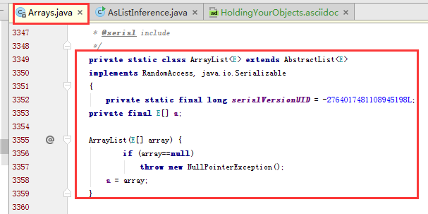

Introduction to Objects
1. The progress of abstraction
所有的编程语言都提供了抽象。汇编语言是底层计算机器指令的抽象，而 C 等语言则是汇编语言的抽象。虽然 C 语言极大地抽象了汇编语言的复杂操作，但是它还是需要你思考计算机的结构而不是思考真正要解决的问题的结构。编程者往往需要在计算机模型与问题模型间建立联系。
面向对象在问题领域提供了进一步的工具来表示这些问题。将问题领域中的元素理解为对象。所以出现了新的问题元素时只是需要添加新的类型的对象即可。
Alan Kay 总结了面向对象的五个特性。
-
Everything is an object .你可以将对象视为一个奇特的变量，它不仅可以存储数据，还可以请求它来执行方法。理论上，在你所解决的问题中，所有组件你都可以抽象为对象。
-
A program is a bunch of objects telling each other what to do by sending messages .即一个程序可以理解为一组互相彼此通讯的对象。
-
Each object has its own memory made up of other objects .换句话说，就是通过组织现的一些对象，来构建新的对象。这样，可以把复杂的程序对象隐藏在一引简单的对象后面，用户只需要知道这个简单的对象即可。
-
Every object has a type . 每一个对象都是一个类的实例，类又可以说是 type 的同义词。区别一个类的最重要的特征是"
What messages can you send to it?" -
All objects of a particular type can receive the same messages .例如，圆这个类的对象同时也是 Shape 这个类的对象，圆可以接受 Shape 的消息。大致就是子类继承父类的行为和特性吧。
Booch 提出了对 对象 更简洁的描述
An object has state, behavior and identity.
这就是说，每一个对象有其内部数据（描述对象的状态）和方法（即对象的行为），并且每一个对象都有别于其它对象，因为每个对象的内存地址是唯一的。
2. An object has an interface
Aristotle 可能是第一个开始学习研究 type 这个概念的人了。他提出，所有的 class 是一个唯一的类型，也是其它拥有通用特征与行为的 class 的子类型。
在面向对象中，创建基础的数据类型 class 是一个基本概念。
3. An object provides services
如果你想开发或理解一个程序设计，最好的方式是将 objects 想象成 "service providers" 。你的程序通过调用提供服务的 object 来为用户提供服务。所以编程者只需要编写一系统提供服务的 object 即可。
4. The hidden implementation
隐藏具体实现可以减少程序bug。通过访问控制来达到这个目标。 Java 使用了3个明确的访问修饰符 public private protected 来做访问控制。
public |
所有人可以访问 |
private |
只自己可以访问 |
protected |
子类可以访问 |
default |
同一包内可以访问 |

8. Interchangeable objects with polymorphism
编码时，依赖于抽象类型，而非具体类型。多态时，会发生向上转换 upcast ，编译器编译时是以基类型进行编译的，而在运行时以具体子类型 upcast 再调用的。
9. The singly rooted hierarchy
单根继承。所有的 objects 继承自基类 Object . 所有对象都是 Object 的好处就是，可以为所有的对象添加一些基本操作，也方便传参。
单根继承，可以让垃圾收集器实现起来更容易些。而且你从来都不会无法确定一个对象的类型，在异常处理等方面很有帮助。
Everything Is an Object
15. You must create all the objects
String s = new String("asdf");15.1. Where storage lives
-
Registers. 寄存器。存储读写速度快，因为它在处理器中。但是数量极其有限，所以这里的空间也是按需分配。你不能直接控制这里的空间分配，而且在程序中也感觉不到这片空间的存在。
-
The Stack. 栈空间。这片区域在 RAM (Random Access Memory) 中，它可以从处理器中直接通过 stack pointer 进行控制。栈指针向下移动则分配空间，向上移动则释放那些已分配的空间。这是一个快速有效的分配存储方法，仅次于 Registers 。在创建程序时， JAVA 系统必须准确地知道存储在 Stack 中的每一项内容的生命周期，这会限制你的程序的扩展性。所以 JAVA 程序在 Stack 中存储的是对象的引用，而对象的存储则是在 Heap 中。
-
The Heap. 堆空间。这是一个通用的内存池（也在 RAM 中），这里存储了所有的 Java Objects 。不像 Stack ，编译器不需要知道 Heap 中的对象需要在 Heap 中生存多久。因此，在 Heap 上存储将会很有扩展性。在 Heap 上分配空间，只需要 new 一下就 Ok 了。当然，这种很好的扩展性也是有代价的，比 stack 在分配和清理空间时需要更多的时间。
-
Constant storage. 常量存储(常量池)。常量值通常直接存放在程序代码中，因为它的值永远不会改变所以这是安全的。有时在嵌入式系统中，也会单独把常量值放在 ROM 中。
-
Non-RAM storage. 非 RAM 存储。如果数据可以独立于程序存储，那么它就可以在程序没有运行时存在。这其中主要的两个例子是 流对象 和 持久化对象 。 Stream Objects 通常被转换为 bytes 然后传输给其它的机器。 persistent objects 通常是将对象及其状态存储到硬盘上。
15.2. Special case: primitive types
基类型是存储在 stack 上的，它直接指向了其值。而 new 出来的对象是在 heap 上的，由 stack 上的 reference 指向 heap 上的 object 。
Java 明确定义了每一种基类型的 size ，而且在不同的机器架构上，这个 size 都不会变。其它语言可能不是这样的哦。

boolean 类型是没有明确指定 size 的，因为它只会有 true 和 false 两个字面量值。
包装类型 是存储在 heap 上的对象，它是对应的 基类型 的对象表现形式。
char c = ‘x’;
Character ch = new Character(c);
Character ch = new Character(‘x’);JavaSE5 的自动装箱能自动将 基类型 转为 包装类型，也能自动将 包装类型 转为 基类型 。
16. You never need to destroy an object
17. Creating new data types: class
使用 class 关键字来创建一个类。
class ATypeName { /* Class body goes here */ }创建了类后，可以使用 new 创建该类的对象
ATypeName a = new ATypeName();19. Building a Java program
20. Your first Java program
// HelloDate.java
import java.util.*;
public class HelloDate {
public static void main(String[] args) {
System.out.println("Hello, it’s: ");
System.out.println(new Date());  }
}
}
}| 将 new 出的 date 对象转换为 String 再输出。 |
|
|
默认情况下，所有的 java 文件，都会自动导入 java.lang 包，哪怕你没有显示地指定。所以你可以不导 java.lang 包就能使用 System 类了。 |
22. Comments and embedded documentation
/* This is a comment
* that continues
* across lines
*/
// This is a one-line comment 
| 多行注释 | |
| 单行注释 |
Operators
25. Precedence
操作符优先级定义了当多个操作符出现在同一表达式中时运行的先后顺序。 Java 有特殊的规则来定义操作符计算顺序，这其中最简单的一个规则就是 * 和 / 比 + 和 - 的优先级高。所以通常使用 () 来保证优先级。
//: operators/Precedence.java
public class Precedence {
public static void main(String[] args) {
int x = 1, y = 2, z = 3;
int a = x + y - 2/2 + z; // (1)
int b = x + (y - 2)/(2 + z); // (2)
System.out.println("a = " + a + " b = " + b);
}
} /* Output:
a = 5 b = 1
*///:~将 int 类型的 a 和 b 转换为了 String 类型，再进行字符串拼接。 |
|
|
26. Assignment
赋值操作是使用 = 操作符完成的，它的意思就是把 = 右边的值 copy 给左侧的变量。右边的值可以是 constant , variable , expression ，如果为静态式或变量均是计算后的值。
a = 4;为变量赋基本类型的值是相当容易的，因为基本类型是持有其真实的值而非一个 对象的引用 。
a = 4;
b = a;
b = 5; 就是直接把基本类型值 4 copy 给变量 b 。 |
|
| 当改变变量 b 的值的时候不会影响变量 a 的值。 |
//: operators/Assignment.java
// Assignment with objects is a bit tricky.
import static net.mindview.util.Print.*;
class Tank {
int level;
}
public class Assignment {
public static void main(String[] args) {
Tank t1 = new Tank();
Tank t2 = new Tank();
t1.level = 9;
t2.level = 47;
print("1: t1.level: " + t1.level +
", t2.level: " + t2.level);
t1 = t2;
print("2: t1.level: " + t1.level +
", t2.level: " + t2.level);
t1.level = 27;
print("3: t1.level: " + t1.level +
", t2.level: " + t2.level);
}
} /* Output:
1: t1.level: 9, t2.level: 47
2: t1.level: 47, t2.level: 47
3: t1.level: 27, t2.level: 27  *///:~
*///:~| 直接为基本类型 field 赋值 | |
引用赋值 t1 = t2; ，两个引用指向同一个 object ，所以输出结果一样。 |
|
使用任一引用 t1 改变 field 值，此时改变的就是具体的 object 的 field 值。而 t2 也引用了同一个 object ，所以输出结果相同。 |
|
上述这种引用复制也称为 aliasing |
27. Aliasing during method calls
将一个 object 作为 parameter 传递入一个 method 时也会发生 aliasing 。
//: operators/PassObject.java
// Passing objects to methods may not be
// what you’re used to.
import static net.mindview.util.Print.*;
class Letter {
char c;
}
public class PassObject {
static void f(Letter y) {
y.c = 'z';
}
public static void main(String[] args) {
Letter x = new Letter();
x.c = 'a';
print("1: x.c: " + x.c);
f(x);
print("2: x.c: " + x.c);
}
} /* Output:
1: x.c: a
2: x.c: z
*///:~在调用方法 f(x) 时，实际上是把引用 x 作为参数传递给了方法 f() 的形参 y 。此时就是一个引用复制，即 y=x 。 |
28. Mathematical operators
基本的数学操作符就是。
operator |
description |
+ |
加号 |
- |
减号 |
* |
乘号 |
/ |
除号 |
% |
取模 |
//: operators/MathOps.java
// Demonstrates the mathematical operators.
import java.util.*;
import static net.mindview.util.Print.*;
public class MathOps {
public static void main(String[] args) {
// Create a seeded random number generator:
Random rand = new Random(47);
int i, j, k;
// Choose value from 1 to 100:
j = rand.nextInt(100) + 1;
print("j : " + j);
k = rand.nextInt(100) + 1;
print("k : " + k);
i = j + k;
print("j + k : " + i);
i = j - k;
print("j - k : " + i);
i = k / j;
print("k / j : " + i);
i = k * j;
print("k * j : " + i);
i = k % j;
print("k % j : " + i);
j %= k;
print("j %= k : " + j);
// Floating-point number tests:
float u, v, w; // Applies to doubles, too
v = rand.nextFloat();
print("v : " + v);
w = rand.nextFloat();
print("w : " + w);
u = v + w;
print("v + w : " + u);
u = v - w;
print("v - w : " + u);
u = v * w;
print("v * w : " + u);
u = v / w;
print("v / w : " + u);
// The following also works for char,
// byte, short, int, long, and double:
Operators 67
68 Thinking in Java Bruce Eckel
u += v;
print("u += v : " + u);
u -= v;
print("u -= v : " + u);
u *= v;
print("u *= v : " + u);
u /= v;
print("u /= v : " + u);
}
} /* Output:
j : 59
k : 56
j + k : 115
j - k : 3
k / j : 0
k * j : 3304
k % j : 56
j %= k : 3
v : 0.5309454
w : 0.0534122
v + w : 0.5843576
v - w : 0.47753322
v * w : 0.028358962
v / w : 9.940527
u += v : 10.471473
u -= v : 9.940527
u *= v : 5.2778773
u /= v : 9.940527
*///:~29. Unary minus and plus operators
一元操作符， + 和 - 。其实一元的 + 和 - 同二元的在运算上没有什么区别。编译器根据你填写的表达式认定你的是一元的还是二元的。
x = -a;
x = a * -b;
x = a * (-b); | 很明显的一元操作符。 | |
| 这种写法会让人困惑，所以通常是第3种写法。 |
|
一元的 |
30. Auto increment and decrement
自加自减操作符。
-
++自加1 -
--自减1
operator |
desc |
解释 |
++a |
pre-increment |
先自加1，再进行运算 |
a++ |
post-increment |
先运算，再自加1 |
--a |
pre-decrement |
先自减1，再运算 |
a-- |
post-decrement |
先运算，再自减1 |
//: operators/AutoInc.java
// Demonstrates the ++ and -- operators.
import static net.mindview.util.Print.*;
public class AutoInc {
public static void main(String[] args) {
int i = 1;
print("i : " + i);
print("++i : " + ++i); // Pre-increment
print("i++ : " + i++); // Post-increment
print("i : " + i);
print("--i : " + --i); // Pre-decrement
print("i-- : " + i--); // Post-decrement
print("i : " + i);
}
} /* Output:
i : 1
++i : 2
i++ : 2
i : 3
--i : 2
i-- : 2
i : 1
*///:~31. Relational operators
比较操作符都会产生一个 boolean 类型的结果值。比较操作符都有
-
< 小于
-
> 大于
-
<= 小于等于
-
>= 大于等于
-
== 等于
-
!= 不等于
== 和 != 适用于所有的基本类型，但是其它几个操作符除了 boolean 类型的不适用外其它基本类型都适用。因为 true >= false 这种是没有任何意义的。
31.1. Testing object equivalence
== 和 != 适用于所有的 objects ，但是其意义是不一样的。
operator |
所有对象 |
基本类型 |
|
适用，只比较引用 |
适用，比较值 |
equals |
适用，默认比较引用，覆写该方法后才能比较具体值。默认String及其它包装类覆写了equals方法 |
不适用 |
//: operators/Equivalence.java
public class Equivalence {
public static void main(String[] args) {
Integer n1 = new Integer(47);
Integer n2 = new Integer(47);
System.out.println(n1 == n2);
System.out.println(n1 != n2);
}
} /* Output:
false
true
*///:~| 只比较栈中的对象引用的值（真实对象的内存地址）是否相等。 |
//: operators/EqualsMethod.java
public class EqualsMethod {
public static void main(String[] args) {
Integer n1 = new Integer(47);
Integer n2 = new Integer(47);
System.out.println(n1.equals(n2));
70 Thinking in Java Bruce Eckel
}
} /* Output:
true
*///:~//: operators/EqualsMethod2.java
// Default equals() does not compare contents.
class Value {
int i;
}
public class EqualsMethod2 {
public static void main(String[] args) {
Value v1 = new Value();
Value v2 = new Value();
v1.i = v2.i = 100;
System.out.println(v1.equals(v2));
}
} /* Output:
false
*///:~类 Value 需要自己 override equals() 方法，否则类 Object 中的 equals 方法默认是直接使用 == 比较引用。 |
32. Logical operators
每一个逻辑关系符 AND (&&) OR (||) NOT (!) 都会基于其参数产生一个 boolean 值。
//: operators/Bool.java
// Relational and logical operators.
import java.util.*;
import static net.mindview.util.Print.*;
public class Bool {
public static void main(String[] args) {
Random rand = new Random(47);
int i = rand.nextInt(100);
int j = rand.nextInt(100);
print("i = " + i);
print("j = " + j);
print("i > j is " + (i > j));
print("i < j is " + (i < j));
print("i >= j is " + (i >= j));
print("i <= j is " + (i <= j));
print("i == j is " + (i == j));
print("i != j is " + (i != j));
// Treating an int as a boolean is not legal Java:
//! print("i && j is " + (i && j));
//! print("i || j is " + (i || j));
//! print("!i is " + !i);
print("(i < 10) && (j < 10) is "
+ ((i < 10) && (j < 10)) );
print("(i < 10) || (j < 10) is "
+ ((i < 10) || (j < 10)) );
}
} /* Output:
i = 58
j = 55
i > j is true
i < j is false
i >= j is true
i <= j is false
i == j is false
i != j is true
(i < 10) && (j < 10) is false
(i < 10) || (j < 10) is false
*///:~|
boolean 值在与 String 拼接时会转换为对应的字符串。 |
32.1. Short-circuiting
使用逻辑操作符时，可能会遇到 Short-circuiting （短路）的情况。
//: operators/ShortCircuit.java
// Demonstrates short-circuiting behavior
// with logical operators.
import static net.mindview.util.Print.*;
72 Thinking in Java Bruce Eckel
public class ShortCircuit {
static boolean test1(int val) {
print("test1(" + val + ")");
print("result: " + (val < 1));
return val < 1;
}
static boolean test2(int val) {
print("test2(" + val + ")");
print("result: " + (val < 2));
return val < 2;
}
static boolean test3(int val) {
print("test3(" + val + ")");
print("result: " + (val < 3));
return val < 3;
}
public static void main(String[] args) {
boolean b = test1(0) && test2(2) && test3(2);
print("expression is " + b);
}
} /* Output:
test1(0)
result: true
test2(2)
result: false
expression is false
*///:~出现了短路现象， _test3(2)_ 是没有被计算的。 |
_test1(0)_ 是 true ， _test2(2)_ 是 false ， true&&false 那么整个表达式也就是 false ，所以就没必要计算 _test3(2)_ 了。
33. Literals
通常情况下，在程序中指定了一个常量值时，编译器是明确知道它的类型的。但是有时还是含糊不清的，这时就需要通过在常量值后面添加后缀来明确地告诉编译器该常量的类型。
//: operators/Literals.java
import static net.mindview.util.Print.*;
public class Literals {
public static void main(String[] args) {
int i1 = 0x2f; // Hexadecimal (lowercase)
print("i1: " + Integer.toBinaryString(i1));
int i2 = 0X2F; // Hexadecimal (uppercase)
print("i2: " + Integer.toBinaryString(i2));
int i3 = 0177; // Octal (leading zero)
print("i3: " + Integer.toBinaryString(i3));
char c = 0xffff; // max char hex value
Operators 73
print("c: " + Integer.toBinaryString(c));
byte b = 0x7f; // max byte hex value
print("b: " + Integer.toBinaryString(b));
short s = 0x7fff; // max short hex value
print("s: " + Integer.toBinaryString(s));
long n1 = 200L; // long suffix
long n2 = 200l; // long suffix (but can be confusing)
long n3 = 200;
float f1 = 1;
float f2 = 1F; // float suffix
float f3 = 1f; // float suffix
double d1 = 1d; // double suffix
double d2 = 1D; // double suffix
// (Hex and Octal also work with long)
}
} /* Output:
i1: 101111
i2: 101111
i3: 1111111
c: 1111111111111111
b: 1111111
s: 111111111111111
*///:~- Long
-
Long类型的后缀为
l或者L - Float
-
Float类型的后缀为
f或者F - Double
-
Double类型的后缀为
d或者D
16 进制以 0x 开头， 8 进制以 0 开头。
Integer 和 Long 类型分别有转换为二进制、十六进制、八进制形式字符串输出的方法：

33.1. Exponential notation
指数
package operators;//: operators/Exponents.java
// "e" means "10 to the power."
public class Exponents {
public static void main(String[] args) {
// Uppercase and lowercase 'e' are the same:
float expFloat = 1.39e-43f;
expFloat = 1.39E-43f;
System.out.println(expFloat);
double expDouble = 47e47d; // 'd' is optional
double expDouble2 = 47e47; // Automatically double
System.out.println(expDouble);
double expDouble3 = 2e2;
System.out.println(expDouble3);
}
} /* Output:
1.39E-43
4.7E48
200.0
*///:~| 1.39e-43f 即 1.39 * 10-43 | |
| 2e2 即 2 * 102 ，所以是 200.0 . 指数默认为 double 类型 |
34. Bitwise operators
按位操作符。 Java 最初设计这种语法是因为要嵌入电视机顶盒考虑的，所以这个还是尽量少用吧。
操作符 |
说明 |
And(&) |
与，当两数的位都是1时，则输出1，否则输出0； |
OR(|) |
或，当两数的位中有一个是1时，则输出1。只有两数都是0时，才输出0； |
XOR(^) |
异或，两个操作数的位中，相同则结果为0，不同则结果为1。 |
NOT(~) |
非，只对一个操作数有效。如果位为0，结果是1，如果位为1，结果是0； |
位操作符，可以与 = 在一起，完成位运算及赋值操作。由于 NOT(~) 是一元操作符，所以它玩不了。
-
&=
-
|=
-
^=
boolean*是以一位来对待的，所以它会有些不同。可以对 *boolean 执行位与、或、异或，但是不能执行位非（可能是考虑会与逻辑非混淆）。
|
|
位与、或、异或会产生与逻辑操作符相同的效果，但是它不会出现 short circuit （短路）现象。 example
|
|
|
不能对 boolean 使用位移操作符。 |
35. Shift operators
位移操作符。位移操作符也可以操作位。它只能被用于基本类型，整形。
操作符 |
说明 |
<< |
将操作数左移指定位数，移出的位将被抛弃，右侧差的位则用0补齐。 |
>> |
将操作数右移指定位数，为正高位补0，为负数高位补1 |
>>> |
无符号右移，无论正负，高位都补0 |
详细操作见 链接
|
一.int的是32位。long的是64位。 如int i = 1; i的二进制原码表示为： 00000000000000000000000000000001 long l = 1; l的二进制原码表示为： 0000000000000000000000000000000000000000000000000000000000000001 二.原码——符号位为0表示正数，为1表示负数； 其余各位等同于真值的绝对值。 如：0000000000000010B=2，1000000000000010B=-2 反码——符号位的用法及正数的表示与“原码”一样； 负数的表示是在“原码”表示的基础上通过将符号位以外 的各位取反来获得的。 如：0000000000000010B=2，1111111111111101B=-2 补码——符号位的用法及正数的表示与“原码”一样； 负数的表示是在“反码”的基础上通过加1来获得的。 如：00000010B=2，11111110B=-2 三。常用的操作 & 与。 全1为1， 有0为0。 任何数与0与都等于0。 | 或。 有1为1， 全0为0。 任何数与0或都等于原值。 ~ 非。 逐位取反 ^ 异或。 相同为0，相异为1。 任何数与0异或都等于原值。 正数在计算机中是用二进制表示的，负数在计算机中使用补码表示的。 |
package operators;
/**
* 位移操作。
* <pre>
* System.out.println(1<<1); //结果2，1左移1位，相当于乘以2
* </pre>
* @author zxb
* @version 1.0.0
* @date 2016年04月10日 13:44
* @since Jdk1.6
*/
public class ShiftBit {
public static void main(String[] args) throws Exception {
int b1 = 1;
int b2 = -4;
System.out.println("b1:" + Integer.toBinaryString(b1));
System.out.println("b2:" + Integer.toBinaryString(b2));
int b3 = b1 << 1;
System.out.println("b3:" + b3);
System.out.println("b1 << 1:" + Integer.toBinaryString(b3));
int b4 = b1 >> 2;
System.out.println("b4:" + b4);
System.out.println("b1 >> 2:" + Integer.toBinaryString(b4));
int b6 = b2 >> 2;
System.out.println("b6:" + b6);
System.out.println("b2 >> 2:" + Integer.toBinaryString(b6));
int b5 = b2 >>> 2;
System.out.println("b5:" + b5);
System.out.println("b2 >> 2:" + Integer.toBinaryString(b5));
System.out.println("2^5:" + (1<<5));
int a = 1;
a <<= 5;
System.out.println("2^5:" + a);
a >>= 3;
System.out.println("a>>=3:" + a);
}
}移位操作符可以与赋值操作符一起使用。即移位后就赋值。（<\<=、>>=、>>>=） |
package operators;//: operators/URShift.java
// Test of unsigned right shift.
import static net.mindview.util.Print.*;
public class URShift {
public static void main(String[] args) {
int i = -1;
print(Integer.toBinaryString(i));
i >>>= 10;
print(Integer.toBinaryString(i));
long l = -1;
print(Long.toBinaryString(l));
l >>>= 10;
print(Long.toBinaryString(l));
short s = -1;
print(Integer.toBinaryString(s));
s >>>= 10;
print(Integer.toBinaryString(s));
byte b = -1;
print(Integer.toBinaryString(b));
b >>>= 10;
print(Integer.toBinaryString(b));
b = -1;
print(Integer.toBinaryString(b));
print(Integer.toBinaryString(b >>> 10));
}
} /* Output:
11111111111111111111111111111111
1111111111111111111111
1111111111111111111111111111111111111111111111111111111111111111
111111111111111111111111111111111111111111111111111111
11111111111111111111111111111111
11111111111111111111111111111111
11111111111111111111111111111111
11111111111111111111111111111111
11111111111111111111111111111111
1111111111111111111111
*///:~|
|
最高位表示符号位。0表示正数，1表示负数。 如正数1，为0000 0000 0000 0000 0000 0000 0000 0001，负数-1为11111111111111111111111111111111 |
35.1. Ternary if-else operator
boolean-exp ? value0 : value1package operators;//: operators/TernaryIfElse.java
import static net.mindview.util.Print.*;
public class TernaryIfElse {
static int ternary(int i) {
return i < 10 ? i * 100 : i * 10;
}
static int standardIfElse(int i) {
if (i < 10)
return i * 100;
else
return i * 10;
}
public static void main(String[] args) {
print(ternary(9));
print(ternary(10));
print(standardIfElse(9));
print(standardIfElse(10));
}
} /* Output:
900
100
900
100
*///:~| 三元运算符，虽然简洁，但是可读性差。还是建议使用if/else |
36. String operator + and +=
+ 与 += 可以用来追加字符串。
在 C# 与 C++ 中，使用 运算符重载 来实现这种特性。
|
在一个表达式中，如果有一个字符串，其它使用 + 拼接的表达式都会最终被计算为字符串并进行字符串拼接。
package operators;//: operators/StringOperators.java
import static net.mindview.util.Print.*;
public class StringOperators {
public static void main(String[] args) {
int x = 0, y = 1, z = 2;
String s = "x, y, z ";
print(s + x + y + z);
print(x + " " + s); // Converts x to a String
s += "(summed) = "; // Concatenation operator
print(s + (x + y + z));
print("" + x); // Shorthand for Integer.toString()
}
} /* Output:
x, y, z 012
0 x, y, z
x, y, z (summed) = 3
0
*///:~38. Casting operators
类型转换操作符，类型转换分为隐式转换和显式转换。
package operators;//: operators/Casting.java
public class Casting {
public static void main(String[] args) {
int i = 200;
long lng = (long)i;
lng = i; // "Widening," so cast not really required
long lng2 = (long)200;
lng2 = 200;
// A "narrowing conversion":
i = (int)lng2; // Cast required
}
} ///:~| 隐式转换，大类型引用指向小类型值。 | |
| 显式转换，小类型引用指向大类型值。 |
除了 boolean 外，其它所有基本类型都可以进行类型转换。
38.1. Truncation and rounding
当执行一个缩小的转换 narrowing conversions ，是可能会损失精度的。
package operators;//: operators/CastingNumbers.java
// What happens when you cast a float
// or double to an integral value?
import static net.mindview.util.Print.*;
public class CastingNumbers {
public static void main(String[] args) {
double above = 0.7, below = 0.4;
float fabove = 0.7f, fbelow = 0.4f;
print("(int)above: " + (int)above);
print("(int)below: " + (int)below);
print("(int)fabove: " + (int)fabove);
print("(int)fbelow: " + (int)fbelow);
}
} /* Output:
(int)above: 0
(int)below: 0
(int)fabove: 0
(int)fbelow: 0
*///:~| 大类型强制转成小类型，丢失了精度。 |
通常， double 和 float 转成 int 是直接被截断的。如果你希望四舍五入，可以采用 java.lang.Math.round() 而非 强制转换 。
package operators;//: operators/RoundingNumbers.java
// Rounding floats and doubles.
import static net.mindview.util.Print.*;
public class RoundingNumbers {
public static void main(String[] args) {
double above = 0.7, below = 0.4;
float fabove = 0.7f, fbelow = 0.4f;
print("Math.round(above): " + Math.round(above));
print("Math.round(below): " + Math.round(below));
print("Math.round(fabove): " + Math.round(fabove));
print("Math.round(fbelow): " + Math.round(fbelow));
}
} /* Output:
Math.round(above): 1
Math.round(below): 0
Math.round(fabove): 1
Math.round(fbelow): 0
*///:~| 因为 java.lang.Math 类属于 java.lang 包，所以你不需要额外地去导该类了。因为默认会导 java.lang.* 。 |
39. Java has no “sizeof”
在 C 或 C++ 中存在 sizeof 方法，这个方法用来得到某一类型所占的字节数。如 int 在 A操作系统 中占 16bit ，在 B操作系统 中占 32bit ，那么程序员要考虑何时是 int 是 16bit 之类的问题。
在 java 中没有这种问题，所以也就不需要 sizeof 方法。因为 java 中所有的类型在不同的操作系统中都是相同的固定长度。
40. A compendium of operators
package operators;//: operators/AllOps.java
// Tests all the operators on all the primitive data types
// to show which ones are accepted by the Java compiler.
public class AllOps {
// To accept the results of a boolean test:
void f(boolean b) {}
void boolTest(boolean x, boolean y) {
// Arithmetic operators:
//! x = x * y;
//! x = x / y;
//! x = x % y;
//! x = x + y;
//! x = x - y;
//! x++;
//! x--;
//! x = +y;
//! x = -y;
// Relational and logical:
//! f(x > y);
//! f(x >= y);
//! f(x < y);
//! f(x <= y);
f(x == y);
f(x != y);
f(!y);
x = x && y;
x = x || y;
// Bitwise operators:
//! x = ~y;
x = x & y;
x = x | y;
x = x ^ y;
//! x = x << 1;
//! x = x >> 1;
//! x = x >>> 1;
// Compound assignment:
//! x += y;
//! x -= y;
//! x *= y;
//! x /= y;
//! x %= y;
//! x <<= 1;
//! x >>= 1;
//! x >>>= 1;
x &= y;
x ^= y;
x |= y;
// Casting:
//! char c = (char)x;
//! byte b = (byte)x;
//! short s = (short)x;
//! int i = (int)x;
//! long l = (long)x;
//! float f = (float)x;
//! double d = (double)x;
}
void charTest(char x, char y) {
// Arithmetic operators:
x = (char)(x * y);
x = (char)(x / y);
x = (char)(x % y);
x = (char)(x + y);
x = (char)(x - y);
x++;
x--;
x = (char)+y;
x = (char)-y;
// Relational and logical:
f(x > y);
f(x >= y);
f(x < y);
f(x <= y);
f(x == y);
f(x != y);
//! f(!x);
//! f(x && y);
//! f(x || y);
// Bitwise operators:
x= (char)~y;
x = (char)(x & y);
x = (char)(x | y);
x = (char)(x ^ y);
x = (char)(x << 1);
x = (char)(x >> 1);
x = (char)(x >>> 1);
// Compound assignment:
x += y;
x -= y;
x *= y;
x /= y;
x %= y;
x <<= 1;
x >>= 1;
x >>>= 1;
x &= y;
x ^= y;
x |= y;
// Casting:
//! boolean bl = (boolean)x;
byte b = (byte)x;
short s = (short)x;
int i = (int)x;
long l = (long)x;
float f = (float)x;
double d = (double)x;
}
void byteTest(byte x, byte y) {
// Arithmetic operators:
x = (byte)(x* y);
x = (byte)(x / y);
x = (byte)(x % y);
x = (byte)(x + y);
x = (byte)(x - y);
x++;
x--;
x = (byte)+ y;
x = (byte)- y;
// Relational and logical:
f(x > y);
f(x >= y);
f(x < y);
f(x <= y);
f(x == y);
f(x != y);
//! f(!x);
//! f(x && y);
//! f(x || y);
// Bitwise operators:
x = (byte)~y;
x = (byte)(x & y);
x = (byte)(x | y);
x = (byte)(x ^ y);
x = (byte)(x << 1);
x = (byte)(x >> 1);
x = (byte)(x >>> 1);
// Compound assignment:
x += y;
x -= y;
x *= y;
x /= y;
x %= y;
x <<= 1;
x >>= 1;
x >>>= 1;
x &= y;
x ^= y;
x |= y;
// Casting:
//! boolean bl = (boolean)x;
char c = (char)x;
short s = (short)x;
int i = (int)x;
long l = (long)x;
float f = (float)x;
double d = (double)x;
}
void shortTest(short x, short y) {
// Arithmetic operators:
x = (short)(x * y);
x = (short)(x / y);
x = (short)(x % y);
x = (short)(x + y);
x = (short)(x - y);
x++;
x--;
x = (short)+y;
x = (short)-y;
// Relational and logical:
f(x > y);
f(x >= y);
f(x < y);
f(x <= y);
f(x == y);
f(x != y);
//! f(!x);
//! f(x && y);
//! f(x || y);
// Bitwise operators:
x = (short)~y;
x = (short)(x & y);
x = (short)(x | y);
x = (short)(x ^ y);
x = (short)(x << 1);
x = (short)(x >> 1);
x = (short)(x >>> 1);
// Compound assignment:
x += y;
x -= y;
x *= y;
x /= y;
x %= y;
x <<= 1;
x >>= 1;
x >>>= 1;
x &= y;
x ^= y;
x |= y;
// Casting:
//! boolean bl = (boolean)x;
char c = (char)x;
byte b = (byte)x;
int i = (int)x;
long l = (long)x;
float f = (float)x;
double d = (double)x;
}
void intTest(int x, int y) {
// Arithmetic operators:
x = x * y;
x = x / y;
x = x % y;
x = x + y;
x = x - y;
x++;
x--;
x = +y;
x = -y;
// Relational and logical:
f(x > y);
f(x >= y);
f(x < y);
f(x <= y);
f(x == y);
f(x != y);
//! f(!x);
//! f(x && y);
//! f(x || y);
// Bitwise operators:
x = ~y;
x = x & y;
x = x | y;
x = x ^ y;
x = x << 1;
x = x >> 1;
x = x >>> 1;
// Compound assignment:
x += y;
x -= y;
x *= y;
x /= y;
x %= y;
x <<= 1;
x >>= 1;
x >>>= 1;
x &= y;
x ^= y;
x |= y;
// Casting:
//! boolean bl = (boolean)x;
char c = (char)x;
byte b = (byte)x;
short s = (short)x;
long l = (long)x;
float f = (float)x;
double d = (double)x;
}
void longTest(long x, long y) {
// Arithmetic operators:
x = x * y;
x = x / y;
x = x % y;
x = x + y;
x = x - y;
x++;
x--;
x = +y;
x = -y;
// Relational and logical:
f(x > y);
f(x >= y);
f(x < y);
f(x <= y);
f(x == y);
f(x != y);
//! f(!x);
//! f(x && y);
//! f(x || y);
// Bitwise operators:
x = ~y;
x = x & y;
x = x | y;
x = x ^ y;
x = x << 1;
x = x >> 1;
x = x >>> 1;
// Compound assignment:
x += y;
x -= y;
x *= y;
x /= y;
x %= y;
x <<= 1;
x >>= 1;
x >>>= 1;
x &= y;
x ^= y;
x |= y;
// Casting:
//! boolean bl = (boolean)x;
char c = (char)x;
byte b = (byte)x;
short s = (short)x;
int i = (int)x;
float f = (float)x;
double d = (double)x;
}
void floatTest(float x, float y) {
// Arithmetic operators:
x = x * y;
x = x / y;
x = x % y;
x = x + y;
x = x - y;
x++;
x--;
x = +y;
x = -y;
// Relational and logical:
f(x > y);
f(x >= y);
f(x < y);
f(x <= y);
f(x == y);
f(x != y);
//! f(!x);
//! f(x && y);
//! f(x || y);
// Bitwise operators:
//! x = ~y;
//! x = x & y;
//! x = x | y;
//! x = x ^ y;
//! x = x << 1;
//! x = x >> 1;
//! x = x >>> 1;
// Compound assignment:
x += y;
x -= y;
x *= y;
x /= y;
x %= y;
//! x <<= 1;
//! x >>= 1;
//! x >>>= 1;
//! x &= y;
//! x ^= y;
//! x |= y;
// Casting:
//! boolean bl = (boolean)x;
char c = (char)x;
byte b = (byte)x;
short s = (short)x;
int i = (int)x;
long l = (long)x;
double d = (double)x;
}
void doubleTest(double x, double y) {
// Arithmetic operators:
x = x * y;
x = x / y;
x = x % y;
x = x + y;
x = x - y;
x++;
x--;
x = +y;
x = -y;
// Relational and logical:
f(x > y);
f(x >= y);
f(x < y);
f(x <= y);
f(x == y);
f(x != y);
//! f(!x);
//! f(x && y);
//! f(x || y);
// Bitwise operators:
//! x = ~y;
//! x = x & y;
//! x = x | y;
//! x = x ^ y;
//! x = x << 1;
//! x = x >> 1;
//! x = x >>> 1;
// Compound assignment:
x += y;
x -= y;
x *= y;
x /= y;
x %= y;
//! x <<= 1;
//! x >>= 1;
//! x >>>= 1;
//! x &= y;
//! x ^= y;
//! x |= y;
// Casting:
//! boolean bl = (boolean)x;
char c = (char)x;
byte b = (byte)x;
short s = (short)x;
int i = (int)x;
long l = (long)x;
float f = (float)x;
}
} ///:~Controlling Execution
42. True and False
所有的条件语句都使用 true 或 false 来决定语句的执行。
|
Java 不允许使用 nubmer 当作 boolean（在 C 或 C++ 中会把 0 当作 false ，非 0 当作 true）。 |
43. if-else
if-else 是使用最多的控制语句。 else 是可选的。所以可以有以下两种方式使用 if 。
if(Boolean-expression)
statement
or
if(Boolean-expression)
statement
else
statementpackage control;//: control/IfElse.java
import static net.mindview.util.Print.*;
public class IfElse {
static int result = 0;
static void test(int testval, int target) {
if (testval > target)
result = +1;
else if (testval < target)
result = -1;
else
result = 0; // Match
}
public static void main(String[] args) {
test(10, 5);
print(result);
test(5, 10);
print(result);
test(5, 5);
print(result);
}
} /* Output:
1
-1
0
*///:~44. Iteration
循环， while 、 do-while 、 for
- while
-
while(Boolean-expression) statementWhileTestpackage control;//: control/WhileTest.java // Demonstrates the while loop. public class WhileTest { static boolean condition() { boolean result = Math.random() < 0.99; System.out.print(result + ", "); return result; } public static void main(String[] args) { while (condition())
System.out.println("Inside 'while'");
System.out.println("Exited 'while'");
}
} /* (Execute to see output) *///:~直到 condition()为 false 时才退出循环 - do-while
-
do statement while(Boolean-expression);while 与 do-while 的区别在于 do-while 至少执行一次。
- for
-
for(initialization; Boolean-expression; step)
statementinitialization 或 Boolean-expression 或 step 这三者均可为空。 List Characterspackage control;//: control/ListCharacters.java // Demonstrates "for" loop by listing // all the lowercase ASCII letters. public class ListCharacters { public static void main(String[] args) { for (char c = 0; c < 128; c++) if (Character.isLowerCase(c)) System.out.println("value: " + (int) c + " character: " + c); } } /* Output: value: 97 character: a value: 98 character: b value: 99 character: c value: 100 character: d value: 101 character: e value: 102 character: f value: 103 character: g value: 104 character: h value: 105 character: i value: 106 character: j ... *///:~
44.1. The comma operator
在 for 循环中，可以使用多个 comma 。
package control;//: control/CommaOperator.java
public class CommaOperator {
public static void main(String[] args) {
for(int i = 1, j = i + 10; i < 5; i++, j = i * 2) {
System.out.println("i = " + i + " j = " + j);
}
}
} /* Output:
i = 1 j = 11
i = 2 j = 4
i = 3 j = 6
i = 4 j = 8
*///:~| 以逗号隔开，初始化多个相同类型的变量等。 |
45. Foreach Syntax
JavaSE5 推出了更简洁的迭代 Array 与 Container 的 for 语法，这也被称为 foreach syntax 。不再需要初始化一个 int 类型变量来遍历整个序列， foreach 直接将每次迭代的 item 给你。
package control;//: control/ForEachFloat.java
import java.util.*;
public class ForEachFloat {
public static void main(String[] args) {
Random rand = new Random(47);
float f[] = new float[10];
for(int i = 0; i < 10; i++)
f[i] = rand.nextFloat();
for(float x : f)
System.out.println(x);
}
} /* Output:
0.72711575
0.39982635
0.5309454
0.0534122
0.16020656
0.57799757
0.18847865
0.4170137
0.51660204
0.73734957
*///:~| 直接遍历了数组，并且每次迭代时将每一个 item 给你。 |
package control;//: control/ForEachString.java
public class ForEachString {
public static void main(String[] args) {
for(char c : "An African Swallow".toCharArray() )
System.out.print(c + " ");
}
} /* Output:
A n A f r i c a n S w a l l o w
*///:~| 迭代 char 数组 |
|
foreach 可以用于所有实现了 Iterable 接口的对象。 |
46. return
return 关键字的用处：
-
指定方法的返回值（如果方法不是 void ）
-
退出当前方法
package control;//: control/IfElse2.java
import static net.mindview.util.Print.*;
public class IfElse2 {
static int test(int testval, int target) {
if(testval > target)
return +1;
else if(testval < target)
return -1;
else
return 0; // Match
}
public static void main(String[] args) {
print(test(10, 5));
print(test(5, 10));
print(test(5, 5));
}
} /* Output:
1
-1
0
*///:~| 其实这里可以不再需要 else ，因为 return 执行后方法就结果了。 |
|
如果 method 的返回值类型为 void ，那么可以不用指定 return 。 如果 method 的返回值为明确的某一类型，那么就必须在方法中指定 return 。 |
47. break and continue
在循环内部可以通过 break 与 continue 控制循环。
| break |
不再执行余下代码，并跳出当前循环。 |
| continue |
停止当前执行，并跳到循环开始处继续执行。 |
package control;//: control/BreakAndContinue.java
// Demonstrates break and continue keywords.
import static net.mindview.util.Range.*;
public class BreakAndContinue {
public static void main(String[] args) {
for(int i = 0; i < 100; i++) {
if(i == 74) break; // Out of for loop
if(i % 9 != 0) continue; // Next iteration
System.out.print(i + " ");
}
System.out.println();
// Using foreach:
for(int i : range(100)) {
if(i == 74) break; // Out of for loop
if(i % 9 != 0) continue; // Next iteration
System.out.print(i + " ");
}
System.out.println();
int i = 0;
// An "infinite loop":
while(true) {
i++;
int j = i * 27;
if(j == 1269) break; // Out of loop
if(i % 10 != 0) continue; // Top of loop
System.out.print(i + " ");
}
}
} /* Output:
0 9 18 27 36 45 54 63 72
0 9 18 27 36 45 54 63 72
10 20 30 40
*///:~48. The infamous “goto”
goto 是指如在条件A处跳到B处，条件B处又直接跳转到A处。
问题的本身不是使用 goto ，而是过度使用 goto ，最终导致程序控制流程惨不忍睹。其实某些特殊情况，使用 goto 是非常方便地能解决问题的。
|
goto 在 java 中是保留的关键字，而且也没有使用 goto 了。 |
在 java 中可以使用 label 与 break 或 continue 来达到类似 goto 的 jump 效果。
- label
-
label就是一个标识符，以冒号结尾。
label1:{ statement; } label2: outer-iteration { inner-iteration { //... break;
//...
continue;
//...
continue label1;
//...
break label1;  }
}
}
}break inner-iteration continue inner-iteration continue outer-iteration break outer-interation
使用 label 最有用处的地方主要还是在循环中，因为 break 与 continue 只能跳出当前的循环，对付嵌套循环就不好办了。
package control;//: control/LabeledFor.java
// For loops with "labeled break" and "labeled continue."
import static net.mindview.util.Print.*;
public class LabeledFor {
public static void main(String[] args) {
int i = 0;
outer: // Can't have statements here
for(; true ;) { // infinite loop
inner: // Can't have statements here
for(; i < 10; i++) {
print("i = " + i);
if(i == 2) {
print("continue");
continue;
}
if(i == 3) {
print("break");
i++; // Otherwise i never
// gets incremented.
break;
}
if(i == 7) {
print("continue outer");
i++; // Otherwise i never
// gets incremented.
continue outer;
}
if(i == 8) {
print("break outer");
break outer;
}
for(int k = 0; k < 5; k++) {
if(k == 3) {
print("continue inner");
continue inner;
}
}
}
}
// Can't break or continue to labels here
}
} /* Output:
i = 0
continue inner
i = 1
continue inner
i = 2
continue
i = 3
break
i = 4
continue inner
i = 5
continue inner
i = 6
continue inner
i = 7
continue outer
i = 8
break outer
*///:~| 如果跳转外层循环后，方法就结束了的话，也可以直接使用 return |
package control;//: control/LabeledWhile.java
// While loops with "labeled break" and "labeled continue."
import static net.mindview.util.Print.*;
public class LabeledWhile {
public static void main(String[] args) {
int i = 0;
outer:
while(true) {
print("Outer while loop");
while(true) {
i++;
print("i = " + i);
if(i == 1) {
print("continue");
continue;
}
if(i == 3) {
print("continue outer");
continue outer;
}
if(i == 5) {
print("break");
break;
}
if(i == 7) {
print("break outer");
break outer;
}
}
}
}
} /* Output:
Outer while loop
i = 1
continue
i = 2
i = 3
continue outer
Outer while loop
i = 4
i = 5
break
Outer while loop
i = 6
i = 7
break outer
*///:~|
|
不推荐使用 label ，除非在遇到嵌套循环不好处理时。 使用 label 将降低程序可读性、可分析性，使代码难维护。 |
49. switch
switch 有时也被称为选择语句。
- switch
-
switch(integral-selector) { case integral-value1 : statement; break; case integral-value2 : statement; break;
case integral-value3 : statement; break;
case integral-value4 : statement; break;
case integral-value5 : statement; break;
// ...
default: statement;
}break 是可选的，如果没有 break ，则会一直执行下面的 case 直到遇到 break 。 swtich 将 integral-selector 与所有的 case 进行比较。如果匹配，则执行对应的 statement ，否则执行 default statement 。
package control;//: control/VowelsAndConsonants.java
// Demonstrates the switch statement.
import java.util.*;
import static net.mindview.util.Print.*;
public class VowelsAndConsonants {
public static void main(String[] args) {
Random rand = new Random(47);
for(int i = 0; i < 100; i++) {
int c = rand.nextInt(26) + 'a';
printnb((char)c + ", " + c + ": ");
switch(c) {
case 'a':
case 'e':
case 'i':
case 'o':
case 'u': print("vowel");
break;
case 'y':
case 'w': print("Sometimes a vowel");
break;
default: print("consonant");
}
}
}
} /* Output:
y, 121: Sometimes a vowel
n, 110: consonant
z, 122: consonant
b, 98: consonant
r, 114: consonant
n, 110: consonant
y, 121: Sometimes a vowel
g, 103: consonant
c, 99: consonant
f, 102: consonant
o, 111: vowel
w, 119: Sometimes a vowel
z, 122: consonant
...
*///:~Initialization & Cleanup
关于安全的两个问题就是 Initialization 与 CleanUp 。很多 C 程序的 Bug 是程序员忘记初始化变量了。
C++ 引入了构造函数的概念，构造函数会在对象创建时自动执行。 Java 也引入了构造函数，并且还添加了 Garbage Collector 。
51. Guaranteed initialization with the constructor
package initialization;//: initialization/SimpleConstructor.java
// Demonstration of a simple constructor.
class Rock {
Rock() { // This is the constructor
System.out.print("Rock ");
}
}
public class SimpleConstructor {
public static void main(String[] args) {
for(int i = 0; i < 10; i++)
new Rock();
}
} /* Output:
Rock Rock Rock Rock Rock Rock Rock Rock Rock Rock
*///:~AccessControl
访问控制最常见的是 library 依赖。如 client 依赖于某一 library ，则 library creator 应该保证升级过程中，不对 client 的代码造成影响，如 client 要修改大量代码之类的。
那么 library creator 又如何能知道哪些类或方法或字段被 client 给依赖了呢。为了解决这个问题， java 中使用 访问修饰符 来控制哪些可以被 client 访问，哪些不可以。
57. package: the library unit
一个 package 包含一组类，并且这些类使用相同的 namespace ，即包名。
-
导入单个类 import java.util.ArrayList;
-
导入某包下所有类 import java.util.*;
| 通过包名加类名这种完全限定名来解决类名冲突。 |
|
|
每一个 .java 文件中，只允许出现一个 plubic 声明的类。 |
Reusing Class
58. Final KeyWord
58.1. final data
使用 static final 修饰的常量，命名时以全部大写，且多个单词以下划线分开。 使用 final 修饰的常量不用大写，使用驼峰命名法即可。
- static final
-
static 强调只有一个， final 强调这是一个常量。
- final data
-
-
对基本类型使用 final ，该变量值将不可被改变。
-
对引用类型变量使用 final ，该引用的地址将不改被改变，即不改再将该引用指向其它对象。
-
58.2. Blank finals
- blank finals
-
即将 fields 声明为 final ，但是没有给定一个初始值，但是被 blank finals 声明的变量必须在被使用前先完成初始化。
blank finals 必须在变量定义或构造函数中完成初始化，这样也就保证了它在使用前一定完成了初始化。
58.4. final methods
-
防止该方法被子类 override
-
在早期的 jdk 中指定编译器优化该方法，现在的 Jdk5+ 已经不推荐使用
58.5. final and private
任何 private 的方法其实算是隐式的 final 方法，因为被 private 修饰的方法不可被外部访问，也不可 override 。你可以给 private 修饰的方法添加一个 final 关键字，但是这并不会起什么效果。
59. Initialization and class loading
要想使用一个Java类为自己工作，必须经过以下几个过程
-
类加载load：从字节码二进制文件——.class文件将类加载到内存，从而达到类的从硬盘上到内存上的一个迁移，所有的程序必须加载到内存才能工作。将内存中的class放到运行时数据区的方法区内，之后在堆区建立一个java.lang.Class对象，用来封装方法区的数据结构。这个时候就体现出了万事万物皆对象了，干什么事情都得有个对象。就是到了最底层究竟是鸡生蛋，还是蛋生鸡呢?类加载的最终产物就是堆中的一个java.lang.Class对象。
-
连接：连接又分为以下小步骤 验证：出于安全性的考虑，验证内存中的字节码是否符合JVM的规范，类的结构规范、语义检查、字节码操作是否合法、这个是为了防止用户自己建立一个非法的XX.class文件就进行工作了，或者是JVM版本冲突的问题，比如在JDK6下面编译通过的class(其中包含注解特性的类)，是不能在JDK1.4的JVM下运行的。 准备：将类的静态变量进行分配内存空间、初始化默认值。(对象还没生成呢，所以这个时候没有实例变量什么事情) 解析：把类的符号引用转为直接引用(保留)
-
类的初始化： 将类的静态变量赋予正确的初始值，这个初始值是开发者自己定义时赋予的初始值，而不是默认值。
而类的初始化则是在第一次访问该类时执行，且执行顺序如下：
-
父类静态代码块
-
子类静态代码块
-
父类非静态代码块
-
父类构造函数
-
子类非静态代码块
-
子类构造函数
一般来说就是类的 static field 或 static method 被访问到时就会初始化该类。其实构造函数也是一个特殊的 static method ，只是没有被显示声明。
Polymorphism
60. Method-call binding
Java 中所有绑定的方法都是 late binding ，除了 static 和 final 修饰的方法（private 修饰的方法是隐式的 final 方法）。
61. Constructors and polymorphism
构造函数调用顺序。
-
最顶层父类成员变量初始化
-
最顶层父类构造函数执行
-
依次各次父类成员变量初始化、构造执行
-
当前类成员变量初始化，构造函数执行
|
如果有静态成员变量，则最先执行的为静态成员变量。静态成员变量的初始化，也是先父类后子类。 |
构造函数中涉及多态时调用
//: polymorphism/PolyConstructors.java
// Constructors and polymorphism
// don’t produce what you might expect.
import static net.mindview.util.Print.*;
class Glyph {
void draw() {
print("Glyph.draw()");
}
Glyph() {
print("Glyph() before draw()");
draw();
print("Glyph() after draw()");
}
}
class RoundGlyph extends Glyph {
private int radius = 1;
RoundGlyph(int r) {
radius = r;
print("RoundGlyph.RoundGlyph(), radius = " + radius);
}
void draw() {
print("RoundGlyph.draw(), radius = " + radius);
}
}
public class PolyConstructors {
public static void main(String[] args) {
210 Thinking in Java Bruce Eckel
new RoundGlyph(5);
}
} /* Output:
Glyph() before draw()
RoundGlyph.draw(), radius = 0
Glyph() after draw()
RoundGlyph.RoundGlyph(), radius = 5
*///:~| 父类构造调用 draw() 时，由于多态，结果调用了子类的 draw() 方法。 |
|
62. 可变的返回类型
//: polymorphism/CovariantReturn.java
Polymorphism 211
class Grain {
public String toString() {
return "Grain";
}
}
class Wheat extends Grain {
public String toString() {
return "Wheat";
}
}
class Mill {
Grain process() {
return new Grain();
}
}
class WheatMill extends Mill {
Wheat process() {
return new Wheat();
}
}
public class CovariantReturn {
public static void main(String[] args) {
Mill m = new Mill();
Grain g = m.process();
System.out.println(g);
m = new WheatMill();
g = m.process();
System.out.println(g);
}
} /* Output:
Grain
Wheat
*///:~| 注意，override 父类的 process 方法时，返回类型是子类型。 |
|
JavaSE5 之前会强制子类 override 时必须返回相同的类型，如Grain，而现在则不会。 |
Interfaces
63. Extending an interface with inheritance
对于接口继承时，可以同时继承多个接口。
interface Vampire extends DangerousMonster, Lethal, Flyable {
void drinkBlood();
}| 创建新接口时，可以多继承其它接口 |
|
这种多extends的情况只在接口多继承的情况下有效。 |
64. Fields in interfaces
Interface 上的 field 都自动是 public static final 的。
Interface 上的 fields 并不仅是 Interface 的一部分，它们的值都存储在 静态存储区域 。
65. Nesting interfaces
//: interfaces/nesting/NestingInterfaces.java
package interfaces.nesting;
class A {
interface B {
void f();
}
public class BImp implements B {
public void f() {}
}
private class BImp2 implements B {
public void f() {}
}
public interface C {
void f();
}
class CImp implements C {
public void f() {}
}
private class CImp2 implements C {
public void f() {}
}
private interface D {
void f();
}
private class DImp implements D {
public void f() {}
}
public class DImp2 implements D {
public void f() {}
}
public D getD() { return new DImp2(); }
private D dRef;
public void receiveD(D d) {
dRef = d;
dRef.f();
}
}
interface E {
interface G {
void f();
}
// Redundant "public":
public interface H {
void f();
}
void g();
// Cannot be private within an interface:
//! private interface I {}
}
public class NestingInterfaces {
public class BImp implements A.B {
public void f() {}
}
class CImp implements A.C {
public void f() {}
}
// Cannot implement a private interface except
// within that interface's defining class:
//! class DImp implements A.D {
//! public void f() {}
//! }
class EImp implements E {
public void g() {}
}
class EGImp implements E.G {
public void f() {}
}
class EImp2 implements E {
public void g() {}
class EG implements G {
public void f() {}
}
}
public static void main(String[] args) {
A a = new A();
// Can't access A.D:
//! A.D ad = a.getD();
// Doesn't return anything but A.D:
//! A.DImp2 di2 = a.getD();
// Cannot access a member of the interface:
//! a.getD().f();
// Only another A can do anything with getD():
A a2 = new A();
a2.receiveD(a.getD());
}
} ///:~| 内嵌的接口可以是 private |
InnerClasses
It’s possible to place a class definition within another class definition. This is called an inner class.
内部类是一个非常重要的特性，因为它允许你把类组合在一起同时还能控制类的可见性。
|
内部类跟 composition 是有明显区别的。 |
首先，内部类看起来就像只是简单地把类隐藏在了类中。然而，内部类做了可并不止这些。内部类可以与它所在的外部类之间进行通讯。
67. Creating inner classes
package innerclasses;//: innerclasses/Parcel1.java
// Creating inner classes.
public class Parcel1 {
class Contents {
private int i = 11;
public int value() {
return i;
}
}
class Destination {
private String label;
Destination(String whereTo) {
label = whereTo;
}
String readLabel() {
return label;
}
}
// Using inner classes looks just like
// using any other class, within Parcel1:
public void ship(String dest) {
Parcel1.Contents c = new Contents();
Parcel1.Destination d = new Destination(dest);
Parcel1.Contents e = new Parcel1.Contents();
System.out.println(d.readLabel());
}
public static void main(String[] args) {
Parcel1 p = new Parcel1();
p.ship("Tasmania");
}
} /* Output:
Tasmania
*///:~| 内部类看上去与普通的类没什么区别，只是它放在了外部类里面而已 | |
| 内部类需要使用外部类来访问它 |
然而，更通常的情况是，外部类会有一个方法来返回内部类的引用出去。
package innerclasses;//: innerclasses/Parcel2.java
// Returning a reference to an inner class.
public class Parcel2 {
class Contents {
private int i = 11;
public int value() {
return i;
}
}
class Destination {
private String label;
Destination(String whereTo) {
label = whereTo;
}
String readLabel() {
return label;
}
}
public Destination to(String s) {
return new Destination(s);
}
public Contents contents() {
return new Contents();
}
public void ship(String dest) {
Contents c = contents();
Destination d = to(dest);
System.out.println(d.readLabel());
}
public static void main(String[] args) {
Parcel2 p = new Parcel2();
p.ship("Tasmania");
Parcel2 q = new Parcel2();
// Defining references to inner classes:
Parcel2.Contents c = q.contents();
Parcel2.Destination d = q.to("Borneo");
}
} /* Output:
Tasmania
*///:~| 通过外部类的 to 方法返回一个内部类 Destination 对象 | |
| 通过外部类的 contents 方法返回一个内部类 Contents 对象 | |
| 返回的内部类引用，须要使用 OuterClassName.InnerClassName 来引用哦 |
|
这里的内部类为包访问权限，所以如果出了这个包，你是访问不了这个内部类的，除非内部类声明为 public |
68. The link to the outer class
至目前为止，内部类好像只是将类隐藏及代码重新组织了，并没有其它吸引人的地方，其它并不是这样的。
当你创建一个内部类的时候，内部类中有一个 link to the enclosing object that made it ，即内部类中持有创建它的外部类的一个引用。
|
|
内部类中可以访问外部类的所有成员，哪怕是 private |
package innerclasses;//: innerclasses/Sequence.java
// Holds a sequence of Objects.
interface Selector {
boolean end();
Object current();
void next();
}
public class Sequence {
private Object[] items;
private int next = 0;
public Sequence(int size) {
items = new Object[size];
}
public void add(Object x) {
if (next < items.length)
items[next++] = x;
}
private class SequenceSelector implements Selector {
private int i = 0;
public boolean end() {
return i == items.length;
}
public Object current() {
return items[i];
}
public void next() {
if (i < items.length) i++;
}
}
public Selector selector() {
return new SequenceSelector();
}
public static void main(String[] args) {
Sequence sequence = new Sequence(10);
for (int i = 0; i < 10; i++)
sequence.add(Integer.toString(i));
Selector selector = sequence.selector();
while (!selector.end()) {
System.out.print(selector.current() + " ");
selector.next();
}
}
} /* Output:
0 1 2 3 4 5 6 7 8 9
*///:~| private 内部类实现了外部接口 | |
| 内部类可以完全访问外部类的成员 | |
| 外部类定义 selector 方法返回一个内部类 | |
| 通过接口引用指向 private 内部类。这种方法很牛啊。完成隐藏了内部实现。 |
|
参考 AbstractList 代码，迭代器的实现跟这里完成一样。 |
69. Using .this and .new
当需要在内部类中使用外部类的引用时，可以显式地使用 OuterClassName.this 来获取外部类的引用。
69.1. .this
package innerclasses;//: innerclasses/DotThis.java
// Qualifying access to the outer-class object.
public class DotThis {
void f() {
System.out.println("DotThis.f()");
}
public class Inner {
public DotThis outer() {
return DotThis.this;
// A plain "this" would be Inner's "this"
}
}
public Inner inner() {
return new Inner();
}
public static void main(String[] args) {
DotThis dt = new DotThis();
Inner dti = dt.inner();
dti.outer().f();
}
} /* Output:
DotThis.f()
*///:~| 通过 OuterClassName.this 获取外部类的引用 | |
| 如果直接在这里使用 this ，那么获取的肯定只是内部类的引用 |
69.2. .new
当需要创建内部类的对象时，即不是通过调用外部类的方法来返回一个内部类对象。此时需要使用 new 关键字来实现。
package innerclasses;//: innerclasses/DotNew.java
// Creating an inner class directly using the .new syntax.
public class DotNew {
public class Inner {
}
public static void main(String[] args) {
DotNew dn = new DotNew();
DotNew.Inner dni = dn.new Inner();
}
} ///:~| 通过外部对象然后继承调用 .new Inter() 来创建内部对象。此处的前提是你所在的类能够访问内部类。 |
通常情况下，你不可能在不创建外部类对象的情况下直接创建内部类。 除非内部类是 static 的（静态内部类） 。
70. Inner classes and upcasting
内部类通常会向上转型， upcast 后则一般不会 downcast ，因为内部类通常无法被其它类访问。这种通过 base type 或 interface 的引用访问内部类，可以很好地隐藏内部实现。
class Parcel4 {
private class PContents implements Contents {
private int i = 11;
public int value() {
return i;
}
}
protected class PDestination implements Destination {
private String label;
private PDestination(String whereTo) {
label = whereTo;
}
public String readLabel() {
return label;
}
}
public String destinationLabel(String s){
return new PDestination(s).label;
}
public Destination destination(String s) {
return new PDestination(s);
}
public Contents contents() {
return new PContents();
}
}
public class TestParcel {
public static void main(String[] args) {
Parcel4 p = new Parcel4();
Contents c = p.contents();
Destination d = p.destination("Tasmania");
// Illegal -- can't access private class:
//! Parcel4.PContents pc = p.new PContents();  String label = p.destinationLabel("BeiJing");
System.out.println(label);
}
}///:BeiJing
String label = p.destinationLabel("BeiJing");
System.out.println(label);
}
}///:BeiJing| 内部类为 private 的，所以只有它的外部类能访问它。 | |
| 内部类为 protected ，则有包访问与子类访问它的权限。 | |
| 外部类中可以直接访问内部类的 private 成员。 | |
| 接口引用指向内部类。 如果接口引用指向的内部类为 private 的，那么就不能 downcast 了 。 | |
| 不能在其它类中访问被 private 修饰的内部类。 |
|
除了内部类可以使用 private 和 protected 修饰外，其它的类只能是 public 或者 package access 。 |
71. Inner Classes in methods and scopes
Inner Classes 可以在方法内部或者其它任意的一个 Scope 中创建。
这么做一般有两种原因： . 例如写了一个内部类实现一个接口，然后在方法中返回接口引用。 . 再比如你用内部类帮你解决了一个复杂的问题，但是你不希望内部类被外部访问。
package innerclasses;//: innerclasses/Parcel5.java
// Nesting a class within a method.
public class Parcel5 {
public Destination destination(String s) {
class PDestination implements Destination {
private String label;
private PDestination(String whereTo) {
label = whereTo;
}
public String readLabel() {
return label;
}
}
return new PDestination(s);
}
// private PDestination p;
public void visitPDestination(){
// PDestination p = new PDestination();
}
public static void main(String[] args) {
Parcel5 p = new Parcel5();
Destination d = p.destination("Tasmania");
}
} ///:~| 内部类定义在方法内部，所以这个类的 scope 则只有这个方法了。 | |
| Up Cast 为接口引用 | |
| 在方法外部，也就无法访问这个内部类了 |
package innerclasses;//: innerclasses/Parcel6.java
// Nesting a class within a scope.
public class Parcel6 {
private void internalTracking(boolean b) {
if (b) {
class TrackingSlip {
private String id;
TrackingSlip(String s) {
id = s;
}
String getSlip() {
return id;
}
}
TrackingSlip ts = new TrackingSlip("slip");
String s = ts.getSlip();
}
// Can't use it here! Out of scope:
//! TrackingSlip ts = new TrackingSlip("x");
}
public void track() {
internalTracking(true);
}
public static void main(String[] args) {
Parcel6 p = new Parcel6();
p.track();
}
} ///:~| 内部类定义在 if 代码块中，所以它的访问 scope 就只在这个 if 块中了。 |
|
|
上述定义在 method 或 if 中的内部类，并不是说在每次方法执行或进入 if 中时该类都会编译。 这个类同其它的普通类没什么区别，都只会在初次访问时被编译一次就够了。它与其它普通类的区别在于它的访问 scope 不一样。 |
72. Anonymous inner classes
语法
new 父类构造器（参数列表）|实现接口（）
{
//匿名内部类的类体部分
}| 注意，匿名内部类可以是直接 new 父类或接口哦。 |
LinkedHashMap map = new LinkedHashMap<K, V>(hashTableCapacity, hashTableLoadFactor, true) {
// (an anonymous inner class)
private static final long serialVersionUID = 1;
@Override
protected boolean removeEldestEntry(Map.Entry<K, V> eldest) {
return size() > LRUCache.this.cacheSize;
}
};
Map map = new Map() {
public int size() {
return 0;
}
}| 这就是直接 new 父类构造器 | |
| 这就是直接 new 接口 |
下面的例子可能看起来让人困惑。
72.1. 作为返回值返回匿名内部类
package innerclasses;//: innerclasses/Parcel7.java
// Returning an instance of an anonymous inner class.
public class Parcel7 {
public Contents contents() {
return new Contents() { // Insert a class definition
private int i = 11;
public int value() {
return i;
}
}; // Semicolon required in this case
}
public static void main(String[] args) {
Parcel7 p = new Parcel7();
Contents c = p.contents();
}
} ///:~| 定义了一个匿名内部类，没有名字。该实现类直接 upcast to Contents 了。 |
72.2. 传入构造函数参数给匿名内部类
如果父类型不是接口，而是一个普通的类，并且这个类没有默认构造函数，只有带参函数时。
package innerclasses;
//: innerclasses/Wrapping.java
public class Wrapping {
private int i;
public Wrapping(int x) { i = x; }
public int value() { return i; }
} ///:~
package innerclasses;//: innerclasses/Parcel8.java
// Calling the base-class constructor.
public class Parcel8 {
public Wrapping wrapping(int x) {
// Base constructor call:
return new Wrapping(x) { // Pass constructor argument.
@Override
public int value() {
return super.value() * 47;
}
}; // Semicolon required
}
public static void main(String[] args) {
Parcel8 p = new Parcel8();
Wrapping w = p.wrapping(10);
System.out.println(w.value());
}
} ///:~| 普通的 Java 类 | |
| 返回一个匿名内部类的实现，此处传参 x 给父类的构造函数 | |
| 重写父类的 value 方法 |
72.3. 传参初始化匿名内部的成员变量
package innerclasses;//: innerclasses/Parcel9.java
// An anonymous inner class that performs
// initialization. A briefer version of Parcel5.java.
public class Parcel9 {
// Argument must be final to use inside
// anonymous inner class:
public Destination destination(final String dest) {
return new Destination() {
private String label = dest;
public String readLabel() {
return label;
}
};
}
public static void main(String[] args) {
Parcel9 p = new Parcel9();
Destination d = p.destination("Tasmania");
}
} ///:~| 传参用于初始化内部类的成员变量时，传入的参数必须被 final 修饰 | |
| 使用传入的参数初始化内部类的成员变量 |
72.4. 匿名内部类的构造函数
|
由于匿名内部类是没有名字的，所以它自然是没有构造函数的。这里使用 构造代码块 来实现类似效果。 |
package innerclasses;//: innerclasses/AnonymousConstructor.java
// Creating a constructor for an anonymous inner class.
import static net.mindview.util.Print.*;
abstract class Base {
{
print("Base initial code!");
}
public Base(int i) {
print("Base constructor, i = " + i);
}
public abstract void f();
}
public class AnonymousConstructor {
public static Base getBase(int i) {
return new Base(i) {
{
print("Inside instance initializer");
}
public void f() {
print("In anonymous f()");
}
};
}
public static void main(String[] args) {
Base base = getBase(47);
base.f();
}
} /* Output:
Base initial code!
Base constructor, i = 47
Inside instance initializer
In anonymous f()
*///:~| 使用构造代码块执行匿名内部类的构造初始化 |
72.5. 匿名内部类构造初始化
上述的例子中参数 i 并没有在匿名内部类中使用，下面的例子将会使用参数并初始化。
package innerclasses;//: innerclasses/Parcel10.java
// Using "instance initialization" to perform
// construction on an anonymous inner class.
public class Parcel10 {
public Destination destination(final String dest, final float price) {
return new Destination() {
private int cost;
// Instance initialization for each object:
{
cost = Math.round(price);
if (cost > 100)
System.out.println("Over budget!");
}
private String label = dest;
public String readLabel() {
return label;
}
};
}
public static void main(String[] args) {
Parcel10 p = new Parcel10();
Destination d = p.destination("Tasmania", 101.395F);
}
} /* Output:
Over budget!
*///:~| 传入匿名内部类中使用的参数在参数列表中必须声明为 final 的。 | |
| 匿名内部类的成员变量初始化 | |
| 匿名内部类的构造初始化 | |
| 构造代码块初始化也有不方便之外，它不能重载 |
|
匿名内部类与常规类相比也是有许多限制之处，虽然它可以继承一个类或实现一个接口，但是：
|
73. Factory Method revisited
package innerclasses;//: innerclasses/Factories.java
import static net.mindview.util.Print.*;
interface Service {
void method1();
void method2();
}
interface ServiceFactory {
Service getService();
}
class Implementation1 implements Service {
private Implementation1() {
}
public void method1() {
print("Implementation1 method1");
}
public void method2() {
print("Implementation1 method2");
}
public static ServiceFactory factory =
new ServiceFactory() {
public Service getService() {
return new Implementation1();
}
};
}
class Implementation2 implements Service {
private Implementation2() {
}
public void method1() {
print("Implementation2 method1");
}
public void method2() {
print("Implementation2 method2");
}
public static ServiceFactory factory =
new ServiceFactory() {
public Service getService() {
return new Implementation2();
}
};
}
public class Factories {
public static void serviceConsumer(ServiceFactory fact) {
Service s = fact.getService();
s.method1();
s.method2();
}
public static void main(String[] args) {
serviceConsumer(Implementation1.factory);
// Implementations are completely interchangeable:
serviceConsumer(Implementation2.factory);
}
} /* Output:
Implementation1 method1
Implementation1 method2
Implementation2 method1
Implementation2 method2
*///:~74. Nested classes（静态内部类）
如果你不需要 inner class 与 outer class 之间有关联，你可以使用 static 修饰 inner class 。这也通常被称为 Nested class 。
当使用 static 修饰一个内部类时，也就是创建一个 Nested class 时，这也意味着：
-
不需要一个 outer class 对象来创建该 Nested class 的对象
-
在 Nested class 的对象中，不能访问非静态的外部类对象
Nested class 与普通的 inner class 还有一个区别。普通内部类的字段与方法，只能放在类的外部层次上，所以普通的内部类不能有静态方法、字段及 Nested class ，然而上面这些 Nested class 都可以有。
package innerclasses;//: innerclasses/Parcel11.java
// Nested classes (static inner classes).
public class Parcel11 {
private static class ParcelContents implements Contents {
private int i = 11;
public int value() {
return i;
}
}
protected static class ParcelDestination
implements Destination {
private String label;
private ParcelDestination(String whereTo) {
label = whereTo;
}
public String readLabel() {
return label;
}
// Nested classes can contain other static elements:
public static void f() {
}
static int x = 10;
static class AnotherLevel {
public static void f() {
}
static int x = 10;
}
}
public static Destination destination(String s) {
return new ParcelDestination(s);
}
public static Contents contents() {
return new ParcelContents();
}
public static void main(String[] args) {
Contents c = contents();
Destination d = destination("Tasmania");
}
} ///:~| 静态内部类同样可以使用 private 修饰 | |
| 静态内部类同样可以使用 protected 修饰 | |
| 与普通内部类一样，可以拥有普通的成员变量与方法 | |
| 可以拥有其它静态成员，甚至 Nested class |
74.1. Classes inside interfaces
正常情况下，在 interface 中不可以再放其它代码，但是一个 Nested class 可以放在 interface 中。在 interface 中的任何 class 都自动是 public static 的。
Nested class 放在 interface 中与 interface 的规则并不冲突，它只是用了 Interface 的名称来调用而已。
package innerclasses;
public interface ClassInInterface {
void howdy();
class Test implements ClassInInterface {
public void howdy() {
System.out.println("Howdy!");
}
public static void doHowdy(){
new Test().howdy();
}
}
} /* Output:
Howdy!
*///:~
class TestInterface implements ClassInInterface{
public void howdy() {
ClassInInterface.Test.doHowdy();
System.out.printf("TestInterface's Howdy!");
}
}| 定义接口的方法 | |
| 定义 Nested class 并且实现当前这个接口。 此时 Nested class 默认为 public static 的 | |
| 定义通用 code 给其它处调用 | |
| 在其它实现类中调用 Nested class 中定义的通用代码 |
74.2. Reaching outward from a multiply nested class
一个内部类内嵌多少层都可以，内嵌越深的层是可以完全访问所有包围它的类的成员。
package innerclasses;//: innerclasses/MultiNestingAccess.java
// Nested classes can access all members of all
// levels of the classes they are nested within.
class MNA {
private void f() {
}
class A {
private void g() {
}
public class B {
void h() {
g();
f();
}
}
}
}
public class MultiNestingAccess {
public static void main(String[] args) {
MNA mna = new MNA();
MNA.A mnaa = mna.new A();
MNA.A.B mnaab = mnaa.new B();
mnaab.h();
}
} ///:~| 完全可以访问上层的class中的成员 |
76. Inheriting from inner class
package innerclasses;//: innerclasses/InheritInner.java
// Inheriting an inner class.
class WithInner {
class Inner {
}
}
public class InheritInner extends WithInner.Inner {
//! InheritInner() {} // Won't compile
InheritInner(WithInner wi) {
wi.super();
}
public static void main(String[] args) {
WithInner wi = new WithInner();
InheritInner ii = new InheritInner(wi);
}
} ///:~| 直接写构造函数是编译不通过的 | |
| 需要这么才能写出构造函数来 |
77. Can inner classes be overridden?
通过继承外部类，然后覆写内部类是不行的。不过可以通过继承外部类，然后又同时写个内部类继承外部类的内部类来实现。
package innerclasses;//: innerclasses/BigEgg.java
// An inner class cannot be overriden like a method.
import static net.mindview.util.Print.*;
class Egg {
private Yolk y;
protected class Yolk {
public Yolk() {
print("Egg.Yolk()");
}
}
public Egg() {
print("New Egg()");
y = new Yolk();
}
}
public class BigEgg extends Egg {
public class Yolk {
public Yolk() {
print("BigEgg.Yolk()");
}
}
public static void main(String[] args) {
new BigEgg();
}
} /* Output:
New Egg()
Egg.Yolk()
*///:~| 这里写的 Yolk 类与 Egg 中的 Yolk 类是两个单独的类。这里不存在覆写。 |
package innerclasses;//: innerclasses/BigEgg2.java
// Proper inheritance of an inner class.
import static net.mindview.util.Print.*;
class Egg2 {
protected class Yolk {
public Yolk() {
print("Egg2.Yolk()");
}
public void f() {
print("Egg2.Yolk.f()");
}
}
private Yolk y = new Yolk();
public Egg2() {
print("New Egg2()");
}
public void insertYolk(Yolk yy) {
y = yy;
}
public void g() {
y.f();
}
}
public class BigEgg2 extends Egg2 {
public class Yolk extends Egg2.Yolk {
public Yolk() {
print("BigEgg2.Yolk()");
}
public void f() {
print("BigEgg2.Yolk.f()");
}
}
public BigEgg2() {
insertYolk(new Yolk());
}
public static void main(String[] args) {
Egg2 e2 = new BigEgg2();
e2.g();
}
} /* Output:
Egg2.Yolk()
New Egg2()
Egg2.Yolk()
BigEgg2.Yolk()
BigEgg2.Yolk.f()
*///:~| 这里继承了 Egg2.Yolk | |
| 此处构造函数中传入了当前的 Yolk 类的引用 | |
| 出现了多态 |
78. Inner-class identifiers
---
package innerclasses;//: innerclasses/LocalInnerClass.java
// Holds a sequence of Objects.import static net.mindview.util.Print.*;
interface Counter { int next(); }
public class LocalInnerClass { private int count = 0;
Counter getCounter(final String name) {
// A local inner class:
class LocalCounter implements Counter {
public LocalCounter() {
// Local inner class can have a constructor
print("LocalCounter()");
}
public int next() {
printnb(name); // Access local final
return count++;
}
}
return new LocalCounter();
}
// The same thing with an anonymous inner class:
Counter getCounter2(final String name) {
return new Counter() {
// Anonymous inner class cannot have a named
// constructor, only an instance initializer:
{
print("Counter()");
}
public int next() {
printnb(name); // Access local final
return count++;
}
};
}
public static void main(String[] args) {
LocalInnerClass lic = new LocalInnerClass();
Counter
c1 = lic.getCounter("Local inner "),
c2 = lic.getCounter2("Anonymous inner ");
for (int i = 0; i < 5; i++)
print(c1.next());
for (int i = 0; i < 5; i++)
print(c2.next());
}
} /* Output:
LocalCounter()
Counter()
Local inner 0
Local inner 1
Local inner 2
Local inner 3
Local inner 4
Anonymous inner 5
Anonymous inner 6
Anonymous inner 7
Anonymous inner 8
Anonymous inner 9
*///:~
---
Counter.class LocalInnerClass$l.class
| 内部类，则直接在外部类后面加一个 $ ，匿名内部类没有名字就自动产生了一个序号1 | |
| 这个是方法内的内部类，和外部类中间多了一个S1。我理解的可能是方法的常量值？ | |
| 嵌套多个内部类的话，则依次加 $ |
Holding Your Objects
79. Adding groups of elements
Collection<Integer> collection = new ArrayList<Integer>(Arrays.asList(1,2,3,4,5));
Collections.addAll(collection, 1,2,3,4,5); | 使用构造函数装入其它 Collection | |
| Arrays.asList 将数组转为固定数组的集合 | |
| Collections.addAll() 为集合添加元素 |
|
|
Arrays.asList() 返回的是一个固定长度的数组集合，其继承了AbstractList，其内部维持了一个固定的数组。 由于它没有重写父类的 add 与 remove 方法，所以 Arrays.asList() 返回的 List 调用 add 或 remove 方法将会出现错误。

Figure 2. 见 Arrays 的嵌套类 ArrayList
|
79.1. Arrays.asList
package holding;//: holding/AsListInference.java
// Arrays.asList() makes its best guess about type.
import java.util.*;
class Snow {
}
class Powder extends Snow {
}
class Light extends Powder {
}
class Heavy extends Powder {
}
class Crusty extends Snow {
}
class Slush extends Snow {
}
public class AsListInference {
public static void main(String[] args) {
List<Snow> snow1 = Arrays.asList(
new Crusty(), new Slush(), new Powder());
// Won't compile:
// List<Snow> snow2 = Arrays.asList(
// new Light(), new Heavy());
// Compiler says:
// found : java.util.List<Powder>
// required: java.util.List<Snow>
// Collections.addAll() doesn't get confused:
List<Snow> snow3 = new ArrayList<Snow>();
Collections.addAll(snow3, new Light(), new Heavy());
// Give a hint using an
// explicit type argument specification:
List<Snow> snow4 = Arrays.<Snow>asList(
new Light(), new Heavy());
snow4.add(new Powder());
}
} ///:~| 这里不能编译，父类 Powder 不自动向上转型为 Snow | |
| 使用 Collections.addAll() 不会存在 (1) 中的问题 | |
| 使用 Arrays.<Snow>asList 可以强制转型 | |
| 这里调用失败，不能给 Arrays.asList() 返回的集合 add 或 remove 元素。 |
Exception in thread "main" java.lang.UnsupportedOperationException
at java.util.AbstractList.add(AbstractList.java:131)
at java.util.AbstractList.add(AbstractList.java:91)
at holding.AsListInference.main(AsListInference.java:45)
at sun.reflect.NativeMethodAccessorImpl.invoke0(Native Method)
at sun.reflect.NativeMethodAccessorImpl.invoke(NativeMethodAccessorImpl.java:39)
at sun.reflect.DelegatingMethodAccessorImpl.invoke(DelegatingMethodAccessorImpl.java:25)
at java.lang.reflect.Method.invoke(Method.java:597)
at com.intellij.rt.execution.application.AppMain.main(AppMain.java:144)80. Printing containers
Array 使用 Arrays.toString() 来输入一个可阅读的数组值。 而 Map 或 List 则可以直接输出，因为它们的父类重写了 toString() 。
package holding;//: holding/PrintingContainers.java
// Containers print themselves automatically.
import java.util.*;
import static net.mindview.util.Print.*;
public class PrintingContainers {
static Collection fill(Collection<String> collection) {
collection.add("rat");
collection.add("cat");
collection.add("dog");
collection.add("dog");
return collection;
}
static Map fill(Map<String, String> map) {
map.put("rat", "Fuzzy");
map.put("cat", "Rags");
map.put("dog", "Bosco");
map.put("dog", "Spot");
return map;
}
public static void main(String[] args) {
print(fill(new ArrayList<String>()));
print(fill(new LinkedList<String>()));
print(fill(new HashSet<String>()));
print(fill(new TreeSet<String>()));
print(fill(new LinkedHashSet<String>()));
print(fill(new HashMap<String, String>()));
print(fill(new TreeMap<String, String>()));
print(fill(new LinkedHashMap<String, String>()));
}
} /* Output:
[rat, cat, dog, dog]
[rat, cat, dog, dog]
[dog, cat, rat]
[cat, dog, rat]
[rat, cat, dog]
{dog=Spot, cat=Rags, rat=Fuzzy}
{cat=Rags, dog=Spot, rat=Fuzzy}
{rat=Fuzzy, cat=Rags, dog=Spot}
*///:~ public String toString() {
Iterator<Entry<K,V>> i = entrySet().iterator();
if (! i.hasNext())
return "{}";
StringBuilder sb = new StringBuilder();
sb.append('{');
for (;;) {
Entry<K,V> e = i.next();
K key = e.getKey();
V value = e.getValue();
sb.append(key == this ? "(this Map)" : key);
sb.append('=');
sb.append(value == this ? "(this Map)" : value);
if (! i.hasNext())
return sb.append('}').toString();
sb.append(", ");
}
}通过前面判断来阻止最后追加 , |
public String toString() {
Iterator<E> i = iterator();
if (! i.hasNext())
return "[]";
StringBuilder sb = new StringBuilder();
sb.append('[');
for (;;) {
E e = i.next();
sb.append(e == this ? "(this Collection)" : e);
if (! i.hasNext())
return sb.append(']').toString();
sb.append(", ");
}
}名称 |
说明 |
|
ArrayList |
List，按插入顺序输出。List是不去重复的，基于数组实现。 |
|
LinkedList |
List,按插入顺序输出。保证为插入时的顺序，基于链表实现。 |
|
HashSet |
Set,去重复的，无序，基于Hash查找速度快 |
|
TreeSet |
Set,去重复的，按字母顺序排序 |
|
LinkedHashSet |
Set,去重复的，保证为插入时的顺序，基于链表实现 |
|
HashMap |
Map,key-value，无序的，基于Hash查找速度快 |
|
TreeMap |
Map,key-value，按字母顺序排序 |
|
LinkedHashMap |
Map,key-value，保证为插入时的顺序，基于Hash查找速度快，基于链表实现 |
81. List
List 接口在 Collection 接口之上又添加了一些方法。
- ArrayList
-
擅长随机访问元素，但是不适合在集合中间添加或删除元素。 因为它基于数组实现
- LinkedList
-
不擅长随机访问元素，适合在集合中添加或删除元素。 因为它基于链表实现
package holding;//: holding/ListFeatures.java
import typeinfo.pets.*;
import java.util.*;
import static net.mindview.util.Print.*;
public class ListFeatures {
public static void main(String[] args) {
Random rand = new Random(47);
List<Pet> pets = Pets.arrayList(7);
print("1: " + pets);
Hamster h = new Hamster();
pets.add(h); // Automatically resizes
print("2: " + pets);
print("3: " + pets.contains(h));
pets.remove(h); // Remove by object
Pet p = pets.get(2);
print("4: " + p + " " + pets.indexOf(p));
Pet cymric = new Cymric();
print("5: " + pets.indexOf(cymric));
print("6: " + pets.remove(cymric));
// Must be the exact object:
print("7: " + pets.remove(p));
print("8: " + pets);
pets.add(3, new Mouse()); // Insert at an index
print("9: " + pets);
List<Pet> sub = pets.subList(1, 4);
print("subList: " + sub);
print("10: " + pets.containsAll(sub));
Collections.sort(sub); // In-place sort
print("sorted subList: " + sub);
// Order is not important in containsAll():
print("11: " + pets.containsAll(sub));
Collections.shuffle(sub, rand); // Mix it up
print("shuffled subList: " + sub);
print("12: " + pets.containsAll(sub));
List<Pet> copy = new ArrayList<Pet>(pets);
sub = Arrays.asList(pets.get(1), pets.get(4));
print("sub: " + sub);
copy.retainAll(sub);
print("13: " + copy);
copy = new ArrayList<Pet>(pets); // Get a fresh copy
copy.remove(2); // Remove by index
print("14: " + copy);
copy.removeAll(sub); // Only removes exact objects
print("15: " + copy);
copy.set(1, new Mouse()); // Replace an element
print("16: " + copy);
copy.addAll(2, sub); // Insert a list in the middle
print("17: " + copy);
print("18: " + pets.isEmpty());
pets.clear(); // Remove all elements
print("19: " + pets);
print("20: " + pets.isEmpty());
pets.addAll(Pets.arrayList(4));
print("21: " + pets);
Object[] o = pets.toArray();
print("22: " + o[3]);
Pet[] pa = pets.toArray(new Pet[0]);
print("23: " + pa[3].id());
}
} /* Output:
1: [Rat, Manx, Cymric, Mutt, Pug, Cymric, Pug]
2: [Rat, Manx, Cymric, Mutt, Pug, Cymric, Pug, Hamster]
3: true
4: Cymric 2
5: -1
6: false
7: true
8: [Rat, Manx, Mutt, Pug, Cymric, Pug]
9: [Rat, Manx, Mutt, Mouse, Pug, Cymric, Pug]
subList: [Manx, Mutt, Mouse]
10: true
sorted subList: [Manx, Mouse, Mutt]
11: true
shuffled subList: [Mouse, Manx, Mutt]
12: true
sub: [Mouse, Pug]
13: [Mouse, Pug]
14: [Rat, Mouse, Mutt, Pug, Cymric, Pug]
15: [Rat, Mutt, Cymric, Pug]
16: [Rat, Mouse, Cymric, Pug]
17: [Rat, Mouse, Mouse, Pug, Cymric, Pug]
18: false
19: []
20: true
21: [Manx, Cymric, Rat, EgyptianMau]
22: EgyptianMau
23: 14
*///:~方法 |
说明 |
|
contains |
检查集合中是否存在元素 |
|
remove |
移除指定元素，必须与集合中的元素 equals 为 true 哦 |
|
indexOf |
||
subList |
||
containsAll |
||
Collections.shuffle |
洗牌，打散集合中元素的顺序 |
|
retainAll |
只保留指定 subList 中的元素，也就是非 subList 中的元素则移除 |
|
removeAll |
||
addAll |
||
pets.toArray(new Pet[0]) |
看 toArray 的实现，此处指定数组长度为0时，实际上是重新 new 了一个数组 |
82. Iterator
Iterator 提供了对 Containers 的统一访问，使得调用者不再需要关心具体的 Container 实现。
Java Iterator 只能朝一个方向移动（遍历）。
-
使用 Collection 的 iterator() 方法返回一个 Iterator 对象
-
获取序列中的下一对象，调用 Iterator 的 next() 方法
-
查看是否有下一对象时，使用 hasNext() 方法
-
移除最后获得的对象，使用 remove() 方法
package holding;//: holding/SimpleIteration.java
import typeinfo.pets.*;
import java.util.*;
public class SimpleIteration {
public static void main(String[] args) {
List<Pet> pets = Pets.arrayList(12);
Iterator<Pet> it = pets.iterator();
while (it.hasNext()) {
Pet p = it.next();
System.out.print(p.id() + ":" + p + " ");
}
System.out.println();
// A simpler approach, when possible:
for (Pet p : pets)
System.out.print(p.id() + ":" + p + " ");
System.out.println();
// An Iterator can also remove elements:
it = pets.iterator();
for (int i = 0; i < 6; i++) {
it.next();
it.remove();
}
System.out.println(pets);
}
} /* Output:
0:Rat 1:Manx 2:Cymric 3:Mutt 4:Pug 5:Cymric 6:Pug 7:Manx 8:Cymric 9:Rat 10:EgyptianMau 11:Hamster
0:Rat 1:Manx 2:Cymric 3:Mutt 4:Pug 5:Cymric 6:Pug 7:Manx 8:Cymric 9:Rat 10:EgyptianMau 11:Hamster
[Pug, Manx, Cymric, Rat, EgyptianMau, Hamster]
*///:~| foreach 写法，实际上也是调用 iterator 实现的。所以它只能遍历实现了 Iterator 接口的 container |
|
remove() 方法是可选的，即不是所有的 Iterator 实现类都需要实现该方法。 不过 JDK 中的 container 都实现了该方法。 |
82.1. ListIterator
ListIterator 是 List 专有的一个 Iterator 的子接口，通过调用 listIterator() 获得。
Iterator 只能向 next 遍历，而 ListIterator 则可以向 previous 遍历。
package holding;//: holding/ListIteration.java
import typeinfo.pets.*;
import java.util.*;
public class ListIteration {
public static void main(String[] args) {
List<Pet> pets = Pets.arrayList(8);
ListIterator<Pet> it = pets.listIterator();
while (it.hasNext())
System.out.print(it.next() + ", " + it.nextIndex() +
", " + it.previousIndex() + "; ");
System.out.println();
// Backwards:
while (it.hasPrevious())
System.out.print(it.previous().id() + " ");
System.out.println();
System.out.println(pets);
it = pets.listIterator(3);
while (it.hasNext()) {
it.next();
it.set(Pets.randomPet());
}
System.out.println(pets);
}
} /* Output:
Rat, 1, 0; Manx, 2, 1; Cymric, 3, 2; Mutt, 4, 3; Pug, 5, 4; Cymric, 6, 5; Pug, 7, 6; Manx, 8, 7;
7 6 5 4 3 2 1 0
[Rat, Manx, Cymric, Mutt, Pug, Cymric, Pug, Manx]
[Rat, Manx, Cymric, Cymric, Rat, EgyptianMau, Hamster, EgyptianMau]
*///:~| 该方法的一个重载，详见文档说明。这里表示从索引位置为 3 处开始向 next 或 previous 遍历。 | |
| 同时还有 set 方法，来直接修改 List 中的对象 |
83. LinkedList
LinkedList 同 ArrayList 一样实现了抽象接口 List ，但是它在执行往集合中间添加或移除数据时比 ArrayList 更方便且性能消耗小很多，相反，在随机访问元素上比不过 ArrayList 。
LinkedList 添加了一些方法，使它可以像 Stack Queue 或 双出口的 Queue 使用。
方法 |
说明 |
|
add |
插入元素至队列尾部 |
|
offer |
插入元素至队列尾部，当使用容量有限制的队列时，此方法比 add 更好 |
|
poll |
获取并移除队列头部元素，如果队列为空，将返回 null |
|
element |
获取但是不移除队列头部元素，如果队列为空，将抛出异常 |
|
peek |
获取但是不移除队列头部元素，如果队列为空，将返回 null |
方法 |
名称 |
|
getFirst |
取得队列头部元素，如果队列为空，将抛出 NoSuchElementException |
|
element |
取得队列头部元素，如果队列为空，将抛出 NoSuchElementException |
|
peek |
取得队列头部元素，如果队列为空，将返回 null |
方法 |
名称 |
|
remove |
获取队列头部元素并移除，如果队列为空，将抛出 NoSuchElementException |
|
removeFirst |
等同于 remove |
|
pool |
获取队列头部元素并移除，如果队列为空，将返回 null |
|
removeLast |
获取并移除队列尾部的元素 |
方法 |
名称 |
|
addFirst |
添加元素至队列头部 |
|
add |
添加元素至队列尾部 |
|
addLast |
等同于 add |
|
offer |
等同于 add |
package holding;//: holding/LinkedListFeatures.java
import typeinfo.pets.*;
import java.util.*;
import static net.mindview.util.Print.*;
public class LinkedListFeatures {
public static void main(String[] args) {
LinkedList<Pet> pets =
new LinkedList<Pet>(Pets.arrayList(5));
print(pets);
// Identical:
print("pets.getFirst(): " + pets.getFirst());
print("pets.element(): " + pets.element());
// Only differs in empty-list behavior:
print("pets.peek(): " + pets.peek());
// Identical; remove and return the first element:
print("pets.remove(): " + pets.remove());
print("pets.removeFirst(): " + pets.removeFirst());
// Only differs in empty-list behavior:
print("pets.poll(): " + pets.poll());
print(pets);
pets.addFirst(new Rat());
print("After addFirst(): " + pets);
pets.offer(Pets.randomPet());
print("After offer(): " + pets);
pets.add(Pets.randomPet());
print("After add(): " + pets);
pets.addLast(new Hamster());
print("After addLast(): " + pets);
print("pets.removeLast(): " + pets.removeLast());
}
} /* Output:
[Rat, Manx, Cymric, Mutt, Pug]
pets.getFirst(): Rat
pets.element(): Rat
pets.peek(): Rat
pets.remove(): Rat
pets.removeFirst(): Manx
pets.poll(): Cymric
[Mutt, Pug]
After addFirst(): [Rat, Mutt, Pug]
After offer(): [Rat, Mutt, Pug, Cymric]
After add(): [Rat, Mutt, Pug, Cymric, Pug]
After addLast(): [Rat, Mutt, Pug, Cymric, Pug, Hamster]
pets.removeLast(): Hamster
*///:~84. Stack
Stack 经常被称为 "last-in,first-out" 的 container ，也被称为 push down 栈，向下存储。因为你最后放入的元素，将会是第一个被你弹出的元素。
LinkedList 中有相关的方法直接实现了 Stack 的功能，所以你甚至可以直接使用 LinkedList 当作 Stack 使用。然而有时候， Stack 更有语义一些。

85. Set
名称 |
说明 |
HashSet |
基于hash的快速查找 |
LinkedHashSet |
基于hash的快速查找，且保持了元素的顺序，按插入时的顺序保存 |
TreeSet |
基于红黑树的Set，按指定的compator排序。 |
|
String.CASE_INSENSITIVE_ORDER 是 String 类提供的可以忽略大小写的 Compator |
87. Queue
queue 是一个典型的 FIFO (first-in, first-out) 容器，即 先入先出 。
队列通常用于从程序的某一处将对象传输到另一处，尤其在多线程情况下可以安全地将对象从一个任务传输到另一个任务中。
|
LinkedList 实现了 Queue 接口。 Queue 接口继承自 Collection 接口。 |
87.1. PriorityQueue
PriorityQueue 即带有优先级顺序的队列，即优先级越高的对象越靠前。
package holding;//: holding/PriorityQueueDemo.java
import java.util.*;
public class PriorityQueueDemo {
public static void main(String[] args) {
PriorityQueue<Integer> priorityQueue =
new PriorityQueue<Integer>();
Random rand = new Random(47);
for(int i = 0; i < 10; i++)
priorityQueue.offer(rand.nextInt(i + 10));
QueueDemo.printQ(priorityQueue);
List<Integer> ints = Arrays.asList(25, 22, 20,
18, 14, 9, 3, 1, 1, 2, 3, 9, 14, 18, 21, 23, 25);
priorityQueue = new PriorityQueue<Integer>(ints);
QueueDemo.printQ(priorityQueue);
priorityQueue = new PriorityQueue<Integer>(
ints.size(), Collections.reverseOrder());
priorityQueue.addAll(ints);
QueueDemo.printQ(priorityQueue);
String fact = "EDUCATION SHOULD ESCHEW OBFUSCATION";
List<String> strings = Arrays.asList(fact.split(""));
PriorityQueue<String> stringPQ =
new PriorityQueue<String>(strings);
QueueDemo.printQ(stringPQ);
stringPQ = new PriorityQueue<String>(
strings.size(), Collections.reverseOrder());
stringPQ.addAll(strings);
QueueDemo.printQ(stringPQ);
Set<Character> charSet = new HashSet<Character>();
for(char c : fact.toCharArray())
charSet.add(c); // Autoboxing
PriorityQueue<Character> characterPQ =
new PriorityQueue<Character>(charSet);
QueueDemo.printQ(characterPQ);
}
} /* Output:
0 1 1 1 1 1 3 5 8 14
1 1 2 3 3 9 9 14 14 18 18 20 21 22 23 25 25
25 25 23 22 21 20 18 18 14 14 9 9 3 3 2 1 1
A A B C C C D D E E E F H H I I L N N O O O O S S S T T U U U W
W U U U T T S S S O O O O N N L I I H H F E E E D D C C C B A A
A B C D E F H I L N O S T U W
*///:~
|
88. Collection vs. Iterator
由于 Collection 接口继承自 Iterable 接口，所以 Collection 都必须实现 Iterator<T> iterator() 方法
89. Foreach and iterators
JavaSE5 引入了 Iterable 接口，所有实现了该接口的 Container 都可以使用 foreach 来遍历
|
Array is not a Iterable
Array 并不是一个 Iterable ，虽然 Array 也可以使用 foreach 进行遍历。 如果需要将 Array 转换为 Iterable ，则可以使用如 Arrays.asList(array) 来实现。 |
89.1. The Adapter Method idiom
- 适配方法
-
此处借用适配器模式的名字来说的。这里是指在 Container 中通过接口适配实现另一种排序方式。
package holding;//: holding/AdapterMethodIdiom.java
// The "Adapter Method" idiom allows you to use foreach
// with additional kinds of Iterables.
import java.util.ArrayList;
import java.util.Arrays;
import java.util.Collection;
import java.util.Iterator;
class ReversibleArrayList<T> extends ArrayList<T> {
public ReversibleArrayList(Collection<T> c) {
super(c);
}
public Iterable<T> reversed() {
return new Iterable<T>() {
public Iterator<T> iterator() {
return new Iterator<T>() {
int current = size() - 1;
public boolean hasNext() {
return current > -1;
}
public T next() {
return get(current--);
}
public void remove() { // Not implemented
throw new UnsupportedOperationException();
}
};
}
};
}
}
public class AdapterMethodIdiom {
public static void main(String[] args) {
ReversibleArrayList<String> ral =
new ReversibleArrayList<String>(
Arrays.asList("To be or not to be".split(" ")));
// Grabs the ordinary iterator via iterator():
for (String s : ral)
System.out.print(s + " ");
System.out.println();
// Hand it the Iterable of your choice
for (String s : ral.reversed())
System.out.print(s + " ");
}
} /* Output:
To be or not to be
be to not or be To
*///:~| 注意，此处返回的是 Iterable 接口 | |
| 因为 reversed() 方法返回的是 Iterable 接口的实现，所以它可以被 foreach 遍历 |
通过上面的这种方式，可以添加 多种遍历方式 。
package holding;//: holding/MultiIterableClass.java
// Adding several Adapter Methods.
import java.util.*;
public class MultiIterableClass extends IterableClass {
public Iterable<String> reversed() {
return new Iterable<String>() {
public Iterator<String> iterator() {
return new Iterator<String>() {
int current = words.length - 1;
public boolean hasNext() { return current > -1; }
public String next() { return words[current--]; }
public void remove() { // Not implemented
throw new UnsupportedOperationException();
}
};
}
};
}
public Iterable<String> randomized() {
return new Iterable<String>() {
public Iterator<String> iterator() {
List<String> shuffled =
new ArrayList<String>(Arrays.asList(words));
Collections.shuffle(shuffled, new Random(47));
return shuffled.iterator();
}
};
}
public static void main(String[] args) {
MultiIterableClass mic = new MultiIterableClass();
for(String s : mic.reversed())
System.out.print(s + " ");
System.out.println();
for(String s : mic.randomized())
System.out.print(s + " ");
System.out.println();
for(String s : mic)
System.out.print(s + " ");
}
} /* Output:
banana-shaped. be to Earth the know we how is that And
is banana-shaped. Earth that how the be And we know to
And that is how we know the Earth to be banana-shaped.
*///:~90. Summary
-
array 将下标与对象关联，通过下标获取到对象。 array 是通过精确的类型保存的，所以不存在取对象出来时还需要拆箱的。array 可以保存基本类型数据，然而 array 不能 resize
-
Collection 用于保存一组单个对象， Map 用于保存一组有关联的键值对。使用 Java 泛型后，可以不再需要装箱与拆箱的动作了。 Collection 与 Map 都可以在容量达到后自动 resize 。Collection 与 Map 都不能保存基本数据类型，但是可以保存它们的包装类型。
-
同 array 类似， List 也通过下标与对象关联，所以 array 与 List 都是有序的容器。
-
如果你经常使用 random access ，那么请选用 ArrayList 。如果在 List 中间频繁插入与删除的话，那么应该选择 LinkedList
-
Queue 与 Stack 的行为可以通过 LinkedList 提供。
-
Map 是一种将对象与对象关联的方式。 HashMap 主要用于快速访问， TreeMap 则保证元素有序，访问速度不如 HashMap ，而 LinkedHashMap 则保证了元素按插入时的顺序，同时也提供了快速访问。
-
Set 则是保证了元素非重复。 HashSet 提供了快速访问， TreeSet 保证了元素有序，而 LinkedHashSet 则保证元素按插入的顺序，同时提供快速访问。
-
现在不推荐使用过时的如 Vector , Hashtable , Stack 了。
-
实线为实现类
-
虚线为接口
-
实心箭头表示 Produces
Error Handling with Exceptions
92. finally
-
finally在使用label标记的代码块跳出时（GOTO)不会被执行。
-
finally在使用System.exit(0)时不会被执行。
92.1. 异常丢失情况
package exceptions;//: exceptions/LostMessage.java
// How an exception can be lost.
class VeryImportantException extends Exception {
public String toString() {
return "A very important exception!";
}
}
class HoHumException extends Exception {
public String toString() {
return "A trivial exception";
}
}
public class LostMessage {
public static void main(String[] args) {
try {
LostMessage lm = new LostMessage();
try {
lm.f();
} finally {
lm.dispose();
}
} catch (Exception e) {
System.out.println(e);
}
}
void f() throws VeryImportantException {
throw new VeryImportantException();
}
void dispose() throws HoHumException {
throw new HoHumException();
}
} /* Output:
A trivial exception
*///:~| finally块中又抛出了异常， try 块中的异常被丢失，无法被上层捕捉 |
package exceptions;//: exceptions/ExceptionSilencer.java
public class ExceptionSilencer {
public static void main(String[] args) {
try {
throw new RuntimeException();
} finally {
// Using 'return' inside the finally block
// will silence any thrown exception.
return;
}
}
} ///:~95. Exception GuideLines
以下情况下使用异常
-
在适当的级别处理异常。千万不要在你不知道如何处理这个异常时去捕捉这个异常。
-
处理问题
-
修补程序并继续执行程序
-
在当前 context 下处理一些事，并且将 Exception 继续向上抛
-
在当前 context 下处理一些事，并且向上抛出一个不一样的类型的 Exception
-
终止程序
-
简化程序
-
使程序更安全，拙壮
Strings
97. Overloading ‘+’ vs. StringBuilder
使用’+’可以用来拼接字符串
package strings;//: strings/Concatenation.java
public class Concatenation {
public static void main(String[] args) {
String mango = "mango";
String s = "abc" + mango + "def" + 47;
System.out.println(s);
}
} /* Output:
abcmangodef47
*///:~此时可以使用 javap -c Concatenation.class 看反汇编后的代码，通过这个即看具体的实现细节。
Compiled from "Concatenation.java"
public class strings.Concatenation {
public strings.Concatenation();
Code:
0: aload_0
1: invokespecial #1 // Method java/lang/Object."<init>":()V
4: return
public static void main(java.lang.String[]);
Code:
0: ldc #2 // String mango
2: astore_1
3: new #3 // class java/lang/StringBuilder
6: dup
7: invokespecial #4 // Method java/lang/StringBuilder."<init>":()V
10: ldc #5 // String abc
12: invokevirtual #6 // Method java/lang/StringBuilder.append:(Ljava/lang/String;)Ljava/lang/StringBuilder;
15: aload_1
16: invokevirtual #6 // Method java/lang/StringBuilder.append:(Ljava/lang/String;)Ljava/lang/StringBuilder;
19: ldc #7 // String def
21: invokevirtual #6 // Method java/lang/StringBuilder.append:(Ljava/lang/String;)Ljava/lang/StringBuilder;
24: bipush 47
26: invokevirtual #8 // Method java/lang/StringBuilder.append:(I)Ljava/lang/StringBuilder;
29: invokevirtual #9 // Method java/lang/StringBuilder.toString:()Ljava/lang/String;
32: astore_2
33: getstatic #10 // Field java/lang/System.out:Ljava/io/PrintStream;
36: aload_2
37: invokevirtual #11 // Method java/io/PrintStream.println:(Ljava/lang/String;)V
40: return
}|
由此可见， “+” 追加字符串实际上是用 StringBuilder 来 append 的。 |
然而在 for 循环时，使用 + （隐式使用 StringBuilder ） 与 StringBuilder 还是有区别的。
package strings;//: strings/WhitherStringBuilder.java
public class WhitherStringBuilder {
public String implicit(String[] fields) {
String result = "";
for (int i = 0; i < fields.length; i++)
result += fields[i];
return result;
}
public String explicit(String[] fields) {
StringBuilder result = new StringBuilder();
for (int i = 0; i < fields.length; i++)
result.append(fields[i]);
return result.toString();
}
} ///:~| 隐式使用 StringBuilder | |
| 显式使用 StringBuilder |
javap -c WitherStringBuilder.class
public class strings.WhitherStringBuilder {
public strings.WhitherStringBuilder();
Code:
0: aload_0
1: invokespecial #1 // Method java/lang/Object."<init>":()V
4: return
public java.lang.String implicit(java.lang.String[]);
Code:
0: ldc #2 // String
2: astore_2
3: iconst_0
4: istore_3
5: iload_3
6: aload_1
7: arraylength
8: if_icmpge 38
11: new #3 // class java/lang/StringBuilder
14: dup
15: invokespecial #4 // Method java/lang/StringBuilder."<init>":()V
18: aload_2
19: invokevirtual #5 // Method java/lang/StringBuilder.append:(Ljava/lang/String;)Ljava/lang/StringBuilder;
22: aload_1
23: iload_3
24: aaload
25: invokevirtual #5 // Method java/lang/StringBuilder.append:(Ljava/lang/String;)Ljava/lang/StringBuilder;
28: invokevirtual #6 // Method java/lang/StringBuilder.toString:()Ljava/lang/String;
31: astore_2
32: iinc 3, 1
35: goto 5
38: aload_2
39: areturn
public java.lang.String explicit(java.lang.String[]);
Code:
0: new #3 // class java/lang/StringBuilder
3: dup
4: invokespecial #4 // Method java/lang/StringBuilder."<init>":()V
7: astore_2
8: iconst_0
9: istore_3
10: iload_3
11: aload_1
12: arraylength
13: if_icmpge 30
16: aload_2
17: aload_1
18: iload_3
19: aaload
20: invokevirtual #5 // Method java/lang/StringBuilder.append:(Ljava/lang/String;)Ljava/lang/StringBuilder;
23: pop
24: iinc 3, 1
27: goto 10
30: aload_2
31: invokevirtual #6 // Method java/lang/StringBuilder.toString:()Ljava/lang/String;
34: areturn
}implicit 方法中 '+' 的隐式创建 StringBuilder 是在 for 循环中完成的。 |
|
for 循环中不要使用 |
|
与 StringBuilder 类似的是 StringBuffer ， StringBuffer 为线程安全的。 |
98. Unintended recursion
package strings;//: strings/InfiniteRecursion.java
// Accidental recursion.
// {RunByHand}
import java.util.ArrayList;
import java.util.List;
public class InfiniteRecursion {
public static void main(String[] args) {
List<InfiniteRecursion> v =
new ArrayList<InfiniteRecursion>();
for (int i = 0; i < 10; i++)
v.add(new InfiniteRecursion());
System.out.println(v);
}
public String toString() {
return " InfiniteRecursion address: " + this + "\n";
}
} ///:~| 注意，此处 "+" 连接 this 会造成递归调用 toString() 方法 |
99. String.intern()
package strings;
/**
* String.intern()说明
*
* @author zxb
* @version 1.0.0
* 2016年06月24日 14:34
* @since Jdk1.6
*/
public class Intern {
public static void main(String[] args) throws Exception {
String myName = "zxb";
String myNameObj = new String("zxb");
System.out.printf("myName==myNameObj:%s", myName == myNameObj);
System.out.println();
String myNameIntern = "zxb".intern();
System.out.printf("myNameIntern==myName:%s", myName == myNameIntern);
System.out.println();
String myNameAppend = "zx" + "b";
myNameIntern = myNameAppend.intern();
System.out.printf("myNameAppend==myNameIntern:%s", myNameAppend == myNameIntern);
System.out.println();
String myNameAppendObj = "zx";
myNameAppend = myNameAppendObj + "b";
myNameIntern = myNameAppend.intern();
System.out.printf("myNameAppend==myNameIntern:%s", myNameAppend == myNameIntern);
}
}
/*
myName==myNameObj:false
myNameIntern==myName:true
myNameAppend==myNameIntern:true
myNameAppend==myNameIntern:false
*/| 一个在常量池中，一个在堆上 | |
| intern 直接从常量池中取值了 | |
| 此处两个字符串直接相加，并没有走StringBuilder.append()，而是直接优化为了常量值中的 "zxb" | |
| 此处走了StringBuilder.append()，在堆上创建的并返回了新对象。而其 intern() 则是从常量池中拿的值。 |
100. Formating output
100.1. Formatter class
System.out.format(); 及 System.out.printf() 都是通过调用 Formatter 的 format 方法完成格式化的。
100.2. Format specifiers
%[argument_index$][flags][width][.precision]conversion
- argument_index
-
参数下标，从1开始。此处指定要使用的替换参数
- flags
-
标记，默认格式化输出是右对齐，此处指定
-则为左对齐 - width
-
指定格式化输出的字符串宽度
- precision
-
精度
- conversion
-
即下面的 Formatter conversions
package strings;//: strings/Receipt.java
import java.util.*;
public class Receipt {
private double total = 0;
private Formatter f = new Formatter(System.out);
public void printTitle() {
f.format("%2$-15s %2$5s %3$10s\n", "Item", "Qty", "Price");
f.format("%-15s %5s %10s\n", "----", "---", "-----");
}
public void print(String name, int qty, double price) {
f.format("%-15.15s %5d %10.2f\n", name, qty, price);
total += price;
}
public void printTotal() {
f.format("%-15s %5s %10.2f\n", "Tax", "", total*0.06);
f.format("%-15s %5s %10s\n", "", "", "-----");
f.format("%-15s %5s %10.2f\n", "Total", "",
total * 1.06);
}
public static void main(String[] args) {
Receipt receipt = new Receipt();
receipt.printTitle();
receipt.print("Jack's Magic Beans", 4, 4.25);
receipt.print("Princess Peas", 3, 5.1);
receipt.print("Three Bears Porridge", 1, 14.29);
receipt.printTotal();
}
} /* Output:
Item Qty Price
Jack's Magic Be 4 4.25
Princess Peas 3 5.10
Three Bears Por 1 14.29
Tax 1.42
-----
Total 25.06
*///:~100.3. Formatter conversions
d |
Integral (as decimal) |
c |
Unicode character |
b |
Boolean value |
s |
String |
f |
Floating point (as decimal) |
e |
Floating point (in scientific notation) |
x |
Integral (as hex) |
h |
Hash code (as hex) |
% |
Literal "%" |
100.4. String.format()
String.format() 接收与 Formatter 的 format() 相同的参数，但是返回 String 对象。如果只使用一次 format ，可以直接使用 String.format() 方法，否则还是建议使用 Formatter 来格式化。
100.4.1. A hex dump tool
使用 format 作一个 hex 工具。当需要将 byte[] 转换 hex 输出时。
//: net/mindview/util/Hex.java
package net.mindview.util;
import java.io.File;
public class Hex {
public static String format(byte[] data) {
StringBuilder result = new StringBuilder();
int n = 0;
for (byte b : data) {
if (n % 16 == 0)
result.append(String.format("%05X: ", n));
result.append(String.format("%02X ", b));
n++;
if (n % 16 == 0) result.append("\n");
}
result.append("\n");
return result.toString();
}
public static void main(String[] args) throws Exception {
if (args.length == 0)
// Test by displaying this class file:
System.out.println(
format(BinaryFile.read("Hex.class")));
else
System.out.println(
format(BinaryFile.read(new File(args[0]))));
}
} /* Output: (Sample)
00000: CA FE BA BE 00 00 00 31 00 52 0A 00 05 00 22 07
00010: 00 23 0A 00 02 00 22 08 00 24 07 00 25 0A 00 26
00020: 00 27 0A 00 28 00 29 0A 00 02 00 2A 08 00 2B 0A
00030: 00 2C 00 2D 08 00 2E 0A 00 02 00 2F 09 00 30 00
00040: 31 08 00 32 0A 00 33 00 34 0A 00 15 00 35 0A 00
00050: 36 00 37 07 00 38 0A 00 12 00 39 0A 00 33 00 3A
...
*///:~101. Scanning Input
直到现在从一个普通文档读取内容还是相当麻烦的。
package strings;//: strings/SimpleRead.java
import java.io.BufferedReader;
import java.io.IOException;
import java.io.StringReader;
public class SimpleRead {
public static BufferedReader input = new BufferedReader(
new StringReader("Sir Robin of Camelot\n22 1.61803"));
public static void main(String[] args) {
try {
System.out.println("What is your name?");
String name = input.readLine();
System.out.println(name);
System.out.println(
"How old are you? What is your favorite double?");
System.out.println("(input: <age> <double>)");
String numbers = input.readLine();
System.out.println(numbers);
String[] numArray = numbers.split(" ");
int age = Integer.parseInt(numArray[0]);
double favorite = Double.parseDouble(numArray[1]);
System.out.format("Hi %s.\n", name);
System.out.format("In 5 years you will be %d.\n",
age + 5);
System.out.format("My favorite double is %f.",
favorite / 2);
} catch (IOException e) {
System.err.println("I/O exception");
}
}
} /* Output:
What is your name?
Sir Robin of Camelot
How old are you? What is your favorite double?
(input: <age> <double>)
22 1.61803
Hi Sir Robin of Camelot.
In 5 years you will be 27.
My favorite double is 0.809015.
*///:~|
使用 BufferedReader 包装是因为这个类有 readLine() 方法。 |
J2SE5 中 Scanner 类的出现，极大地简化了普通文本扫描读取的烦恼，它能使用正则表达式解析基本类型与 String 类型。
|
Scanner 是多线程下非安全的，需要程序员自己进行额外的同步操作。 |
package strings;//: strings/BetterRead.java
import java.util.Scanner;
public class BetterRead {
public static void main(String[] args) {
Scanner stdin = new Scanner(SimpleRead.input);
System.out.println("What is your name?");
String name = stdin.nextLine();
System.out.println(name);
System.out.println(
"How old are you? What is your favorite double?");
System.out.println("(input: <age> <double>)");
int age = stdin.nextInt();
double favorite = stdin.nextDouble();
System.out.println(age);
System.out.println(favorite);
System.out.format("Hi %s.\n", name);
System.out.format("In 5 years you will be %d.\n",
age + 5);
System.out.format("My favorite double is %f.",
favorite / 2);
}
} /* Output:
What is your name?
Sir Robin of Camelot
How old are you? What is your favorite double?
(input: <age> <double>)
22
1.61803
Hi Sir Robin of Camelot.
In 5 years you will be 27.
My favorite double is 0.809015.
*///:~101.1. Scanner Delimiters
默认情况下， Scanner 以 whitespace (Character.isWhitespace 来判断) 作为分隔符，当然你也可以使用你指定的正则来作为分隔符。
|
scanner.reset() 方法将重置 Scanner 的状态为默认值，即以 useDelimiter, useLocale, or useRadix 等方法改变的状态。 |
package strings;//: strings/ScannerDelimiter.java
import java.util.Scanner;
public class ScannerDelimiter {
public static void main(String[] args) {
Scanner scanner = new Scanner("12, 42, 78, 99, 42");
scanner.useDelimiter("\\s*,\\s*");
while (scanner.hasNextInt())
System.out.println(scanner.nextInt());
}
} /* Output:
12
42
78
99
42
*///:~|
scanner.delimiter() 方法将返回当前使用的 delimiter |
101.2. Scanning with regular expressions
Scanner 不仅可以通过 next(), nextInt() 等方法解析基本类型，还可以使用正则解析复杂的数据。
package strings;//: strings/ThreatAnalyzer.java
import java.util.Scanner;
import java.util.regex.MatchResult;
public class ThreatAnalyzer {
static String threatData =
"58.27.82.161@02/10/2005\n" +
"204.45.234.40@02/11/2005\n" +
"58.27.82.161@02/11/2005\n" +
"58.27.82.161@02/12/2005\n" +
"58.27.82.161@02/12/2005\n" +
"[Next log section with different data format]";
public static void main(String[] args) {
Scanner scanner = new Scanner(threatData);
String pattern = "(\\d+[.]\\d+[.]\\d+[.]\\d+)@" +
"(\\d{2}/\\d{2}/\\d{4})";
while (scanner.hasNext(pattern)) {
scanner.next(pattern);
MatchResult match = scanner.match();
String ip = match.group(1);
String date = match.group(2);
System.out.format("Threat on %s from %s\n", date, ip);
}
}
} /* Output:
Threat on 02/10/2005 from 58.27.82.161
Threat on 02/11/2005 from 204.45.234.40
Threat on 02/11/2005 from 58.27.82.161
Threat on 02/12/2005 from 58.27.82.161
Threat on 02/12/2005 from 58.27.82.161
*///:~String input = "1 fish 2 fish red fish blue fish";
Scanner s = new Scanner(input);
s.findInLine("(\\d+) fish (\\d+) fish (\\w+) fish (\\w+)");
MatchResult result = s.match();
for (int i=1; i<=result.groupCount(); i++)
System.out.println(result.group(i));
s.close();102. StringTokenizer
在 J2SE4 出来以前，只能通过 StringTokenizer 的 tokenize 方法拆分字符串。
package strings;//: strings/ReplacingStringTokenizer.java
import java.util.Arrays;
import java.util.Scanner;
import java.util.StringTokenizer;
public class ReplacingStringTokenizer {
public static void main(String[] args) {
String input = "But I'm not dead yet! I feel happy!";
StringTokenizer stoke = new StringTokenizer(input);
while (stoke.hasMoreElements())
System.out.print(stoke.nextToken() + " ");
System.out.println();
System.out.println(Arrays.toString(input.split(" ")));
Scanner scanner = new Scanner(input);
while (scanner.hasNext())
System.out.print(scanner.next() + " ");
}
} /* Output:
But I'm not dead yet! I feel happy!
[But, I'm, not, dead, yet!, I, feel, happy!]
But I'm not dead yet! I feel happy!
*///:~|
事实证明，现在已经没有必要使用 StringTokenizer 了，现有的 Scanner 等更加强大。 |
RegularExpression
正则表达式
一个正则表达式，通常即一个 String ，必须先编译为 java.util.Pattern 的一个实例。 Pattern 实例可以用来创建 Matcher 对象， Matcher 对象可以用来匹配字符串，匹配到的信息等全部保存在该对象中。
Pattern p = Pattern.compile("a*b");
Matcher m = p.matcher("aaaaab");
boolean b = m.matches();boolean b = Pattern.matches("a*b", "aaaaab"); | 这是示例1的简写形式，只有当正则表达式不需要复用时使用，因为它每次都要重新创建 Pattern 实例。 |
|
Pattern 类是不可变的，并且是多线程下安全的。 Matcher 是多线程下非安全的。 |
103. 基本使用
103.1. String.Matches
package strings;//: strings/IntegerMatch.java
public class IntegerMatch {
public static void main(String[] args) {
System.out.println("-1234".matches("-?\\d+"));
System.out.println("5678".matches("-?\\d+"));
System.out.println("+911".matches("-?\\d+"));
System.out.println("+911".matches("(-|\\+)?\\d+"));
}
} /* Output:
true
true
false
true
*///:~| String.matches() 实际是调用的 Pattern.matches() 方法 |
103.2. String.split
String 的 split 方法中参数实际上即是正则，也就是说其拆分符为正则。
package strings;//: strings/Splitting.java
import java.util.Arrays;
public class Splitting {
public static String knights =
"Then, when you have found the shrubbery, you must " +
"cut down the mightiest tree in the forest... " +
"with... a herring!";
public static void split(String regex) {
System.out.println(
Arrays.toString(knights.split(regex)));
}
public static void main(String[] args) {
split(" "); // Doesn't have to contain regex chars
split("\\W+"); // Non-word characters
split("n\\W+"); // 'n' followed by non-word characters
}
} /* Output:
[Then,, when, you, have, found, the, shrubbery,, you, must, cut, down, the, mightiest, tree, in, the, forest..., with..., a, herring!]
[Then, when, you, have, found, the, shrubbery, you, must, cut, down, the, mightiest, tree, in, the, forest, with, a, herring]
[The, whe, you have found the shrubbery, you must cut dow, the mightiest tree i, the forest... with... a herring!]
*///:~105. 转义符
转义符 \ 用来将特殊字符转义，但是在 java 中 \ 本身也是特殊字符，所以需要继续对 \ 进行转义。
字符 |
转义 |
java中转义 |
|
|
|
{ |
\{ |
\\{ |
(hello) |
\(hello\) |
\\(hello\\) |
106. 字符类
当正则的字符区间之间通过 && 等进行关联时，就需要考虑各字符类之间的优先级了。
优先级别序号 |
名称 |
示例 |
1 |
字符转义 |
\x |
2 |
分组 |
() |
3 |
字符区间 |
a-z |
4 |
字符区间并集 |
[a-e][i-u] |
5 |
字符区间交集 |
[a-z&&[aeiou]] |
107. 行终止符
行终止符一般为1-2个字符，用于标记一行的结束。以下字符被定义为行终止符。
字符 |
说明 |
\n |
换行符 |
\r\n |
回车换行符 |
\r |
标准回车符 |
\u0085 |
下一行 |
\u2028 |
行分隔符 |
\u2029 |
段落分隔符 |
|
如果 Uninx Lines 模式启用的话，则只有 \n 是支持的。 |
|
正则中 . 默认是匹配所有字符，除了行终止符。 如果 DOTALL 标记启用的话，那么 . 也会匹配行终止符。 |
|
默认情况下， ^ 与 $ 在正则中只会匹配一行的开头和结尾，不会匹配到行终止符。如果 MULTLINE 模式启用后，那么 ^ 与 $ 会匹配到行终止符，即匹配输入字符串的开头与结尾（哪怕输入字符串是多行的）。 |
108. 分组与捕捉
109. 回溯引用
back reference(回溯引用)指在正则表达式中，后面的引用前面的分组。 引用方式有如下两种
<body>
<h1>Welcome to my page</H1> Content is divided into twosections:
<br>
<h2>Introduction</h2> Information about me.
<H2>Hobby</H2> Information about my hobby.
<h2>This is invalid HTML</h3>
</body>匹配正则为：
<([hH][1-6])>.*?<\/\1>
上述正则中，后面的 \1 就是引用前面的分组内容([hH][1-6])。
111. 量词
量词分为贪婪、勉强、占有模式
- 贪婪模式
-
贪婪模式下正则表达式会 尽可能长 地去匹配符合规则的字符串，且会 回溯
- 勉强模式
-
勉强模式下正则表达式会 尽可能短 地去匹配符合规则的字符串。
- 占有模式
-
同贪婪模式一样匹配最长， 尽可能长 地去匹配字符串，一旦匹配不成功就立即结束，且 不会回溯 。
package strings;
import java.util.regex.Matcher;
import java.util.regex.Pattern;
/**
* @author zxb
* @version 1.0.0
* 2016年07月01日 16:55
* @since Jdk1.6
*/
public class Greedy {
public static void main(String[] args) throws Exception {
String str = "<ol><li>张雄彪</li><br/><li>你好哇嘿</li></ol>";
String greedyPattern = "<li>.*</li>";
String reluctantPattern = "<li>.*?</li>";
String possessivePattern = "<li>.*+</li>";
System.out.println("贪婪模式===");
print(str, greedyPattern);
System.out.println();
System.out.println("勉强模式===");
print(str, reluctantPattern);
System.out.println();
System.out.println("占有模式===");
print(str, possessivePattern);
}
private static void print(String str, String patternStr) {
Pattern pattern = Pattern.compile(patternStr);
Matcher matcher = pattern.matcher(str);
while (matcher.find()) {
System.out.println(matcher.group() + ",start:" + matcher.start() + ",end:" + matcher.end());
}
}
}
/*
贪婪模式===
<li>张雄彪</li><br/><li>你好哇嘿</li>,start:4,end:34
勉强模式===
<li>张雄彪</li>,start:4,end:16
<li>你好哇嘿</li>,start:21,end:34
占有模式===
*/114. CharSequence
interface CharSequence {
charAt(int i);
length();
subSequence(int start,| int end);
toString();
}|
大多数正则表达式的方法采用 CharSequence 作为方法参数 |
115. Pattern and Matcher
通常情况下，你一般会创建出正则表达式的 Pattern 对象，而非使用 String 的正则匹配方法。因为通过 Pattern 能复用正则对象。
Pattern.compile(String pattern) 将返回一个 Pattern 对象。
Pattern 对象的 matcher(String input) 将返回一个 Matcher 对象。
- boolean matches()
-
将尝试将整个输入内容与正则 pattern 进行匹配。当前仅当整个输入被 pattern 匹配到时才为 true 。
- boolean lookingAt()
-
将尝试用正则 pattern 去匹配输入的开头，如果匹配到了就返回 true
- boolean find()
-
将遍历扫描输入，用正则尝试匹配输入的每一个子序列。
尝试查找与该模式匹配的输入序列的下一个子序列。 此方法从匹配器区域的开头开始，如果该方法的前一次调用成功了并且从那时开始匹配器没有被重置，则从以前匹配操作没有匹配的第一个字符开始。 如果匹配成功，则可以通过 start、end 和 group 方法获取更多信息。 返回： 当且仅当输入序列的子序列匹配此匹配器的模式时才返回 true。
115.1. Matches() 与 LookingAt()
package strings;
import java.util.regex.Pattern;
/**
* @author zxb
* @version 1.0.0
* 2016年07月01日 23:21
* @since Jdk1.6
*/
public class MatchesAndLookingAt {
public static void main(String[] args) throws Exception {
String input = "This is my first Car";
String pattern = "This\\s+";
System.out.println("matches:" + Pattern.compile(pattern).matcher(input).matches()); // 无法完整匹配到整个字符串，false
System.out.println("lookingAt:" + Pattern.compile(pattern).matcher(input).lookingAt());// 已经匹配到字符串开头，true
System.out.println();
pattern = "This[\\s\\S]+";
System.out.println("matches:" + Pattern.compile(pattern).matcher(input).matches());//可匹配到整个字符串，true
System.out.println("lookingAt:" + Pattern.compile(pattern).matcher(input).lookingAt());//已经匹配到字符串开头，true
}
}
/*
Output:
matches:false
lookingAt:true
matches:true
lookingAt:true
*/
|
115.2. find()
用正则尝试匹配输入的每一个子序列
package strings;//: strings/Finding.java
import java.util.regex.Matcher;
import java.util.regex.Pattern;
import static java.util.regex.Pattern.compile;
import static net.mindview.util.Print.print;
import static net.mindview.util.Print.printnb;
public class Finding {
public static void main(String[] args) {
Matcher m = compile("\\w+")
.matcher("Evening is full of the linnet's wings");
while (m.find()) {
printnb(m.group() + ",start:" + m.start() + ",end:" + m.end() + " ");
System.out.println();
}
print();
int i = 0;
while (m.find(i)) {
printnb(m.group() + " ");
i++;
}
System.out.println();
m = Pattern.compile("(a(b)?)+").matcher("ababc");
while (m.find()) {
printnb(m.group() + ",start:" + m.start() + ",end:" + m.end());
System.out.println();
System.out.println(m.group(1) + ",start:" + m.start(1) + ",end:" + m.end(1));
System.out.println(m.group(2) + ",start:" + m.start(2) + ",end:" + m.end(2));
}
}
} /* Output:
Evening,start:0,end:7
is,start:8,end:10
full,start:11,end:15
of,start:16,end:18
the,start:19,end:22
linnet,start:23,end:29
s,start:30,end:31
wings,start:32,end:37
Evening vening ening ning ing ng g is is s full full ull ll l of of f the the he e linnet linnet innet nnet net et t s s wings wings ings ngs gs s
abab,start:0,end:4
ab,start:2,end:4
b,start:3,end:4
*///:~| 重置 Matcher ，然后从输入内容的指定位置 i 处开始匹配。 | |
| group(int x) 中取的总是最近一次匹配中的 match | |
| 注意，此处 group(1) 拿的位置 |
|
115.3. Groups
Groups 就是用 () 包括的正则表达式，而且 group 可以通过它的编号进行回溯引用。
Group 0 对应的就是整个表达式匹配到的内容， Group 1 就是第一组 () ，依此类推。
A(B(C))D
| group 0 |
ABCD |
| group 1 |
BC |
| group 2 |
C |
package strings;//: strings/Groups.java
import java.util.regex.Matcher;
import java.util.regex.Pattern;
import static net.mindview.util.Print.print;
import static net.mindview.util.Print.printnb;
public class Groups {
static public final String POEM =
"Twas brillig, and the slithy toves\n" +
"Did gyre and gimble in the wabe.\n" +
"All mimsy were the borogoves,\n" +
"And the mome raths outgrabe.\n\n" +
"Beware the Jabberwock, my son,\n" +
"The jaws that bite, the claws that catch.\n" +
"Beware the Jubjub bird, and shun\n" +
"The frumious Bandersnatch.";
public static void main(String[] args) {
Matcher m =
Pattern.compile("(?m)(\\S+)\\s+((\\S+)\\s+(\\S+))$")
.matcher(POEM);
while (m.find()) {
for (int j = 0; j <= m.groupCount(); j++)
printnb("[" + m.group(j) + "]");
print();
}
}
} /* Output:
[the slithy toves][the][slithy toves][slithy][toves]
[in the wabe.][in][the wabe.][the][wabe.]
[were the borogoves,][were][the borogoves,][the][borogoves,]
[mome raths outgrabe.][mome][raths outgrabe.][raths][outgrabe.]
[Jabberwock, my son,][Jabberwock,][my son,][my][son,]
[claws that catch.][claws][that catch.][that][catch.]
[bird, and shun][bird,][and shun][and][shun]
[The frumious Bandersnatch.][The][frumious Bandersnatch.][frumious][Bandersnatch.]
*///:~| (?m) 表示多行匹配 |
115.4. start() , end()
package strings;//: strings/StartEnd.java
import java.util.regex.Matcher;
import java.util.regex.Pattern;
import static net.mindview.util.Print.print;
public class StartEnd {
public static String input =
"As long as there is injustice, whenever a\n" +
"Targathian baby cries out, wherever a distress\n" +
"signal sounds among the stars ... We'll be there.\n" +
"This fine ship, and this fine crew ...\n" +
"Never give up! Never surrender!";
static void examine(String s, String regex) {
Display d = new Display(regex);
Pattern p = Pattern.compile(regex);
Matcher m = p.matcher(s);
while (m.find())
d.display("find() '" + m.group() +
"' start = " + m.start() + " end = " + m.end());
if (m.lookingAt()) // No reset() necessary
d.display("lookingAt() start = "
+ m.start() + " end = " + m.end());
if (m.matches()) // No reset() necessary
d.display("matches() start = "
+ m.start() + " end = " + m.end());
}
public static void main(String[] args) {
for (String in : input.split("\n")) {
print("input : " + in);
for (String regex : new String[]{"\\w*ere\\w*",
"\\w*ever", "T\\w+", "Never.*?!"})
examine(in, regex);
}
}
private static class Display {
private boolean regexPrinted = false;
private String regex;
Display(String regex) {
this.regex = regex;
}
void display(String message) {
if (!regexPrinted) {
print(regex);
regexPrinted = true;
}
print(message);
}
}
} /* Output:
input : As long as there is injustice, whenever a
\w*ere\w*
find() 'there' start = 11 end = 16
\w*ever
find() 'whenever' start = 31 end = 39
input : Targathian baby cries out, wherever a distress
\w*ere\w*
find() 'wherever' start = 27 end = 35
\w*ever
find() 'wherever' start = 27 end = 35
T\w+
find() 'Targathian' start = 0 end = 10
lookingAt() start = 0 end = 10
input : signal sounds among the stars ... We'll be there.
\w*ere\w*
find() 'there' start = 43 end = 48
input : This fine ship, and this fine crew ...
T\w+
find() 'This' start = 0 end = 4
lookingAt() start = 0 end = 4
input : Never give up! Never surrender!
\w*ever
find() 'Never' start = 0 end = 5
find() 'Never' start = 15 end = 20
lookingAt() start = 0 end = 5
Never.*?!
find() 'Never give up!' start = 0 end = 14
find() 'Never surrender!' start = 15 end = 31
lookingAt() start = 0 end = 14
matches() start = 0 end = 31
*///:~116. match flags
匹配的标记，模式。
目前有如下2种写法：
package strings;//: strings/ReFlags.java
import java.util.regex.Matcher;
import java.util.regex.Pattern;
public class ReFlags {
public static void main(String[] args) {
Pattern p = Pattern.compile("^java",
Pattern.CASE_INSENSITIVE | Pattern.MULTILINE);
Matcher m = p.matcher(
"java has regex\nJava has regex\n" +
"JAVA has pretty good regular expressions\n" +
"Regular expressions are in Java");
while (m.find())
System.out.println(m.group());
}
} /* Output:
java
Java
JAVA
*///:~| 指定了多行及忽略大小写匹配 |
|
group() 默认只输出 find() 匹配到的内容 |
117. Split()
split() 将输入内容按照指定的正则表达式拆分为字符串数组。
String [] split(CharSequence input)
String [] split(CharSequence input, int limit) | limit 限制了拆分出来的份数 |
package strings;//: strings/SplitDemo.java
import java.util.Arrays;
import java.util.regex.Pattern;
import static net.mindview.util.Print.print;
public class SplitDemo {
public static void main(String[] args) {
String input =
"This!!unusual use!!of exclamation!!points";
print(Arrays.toString(
Pattern.compile("!!").split(input)));
// Only do the first three:
print(Arrays.toString(
Pattern.compile("!!").split(input, 3)));
}
} /* Output:
[This, unusual use, of exclamation, points]
[This, unusual use, of exclamation!!points]
*///:~118. Replace
字符串正则替换
public Matcher appendReplacement(StringBuffer sb, String replacement)-
读取输入内容，将从前一次 append 的位置开始，到上一匹配的开始位置（start()-1）处的内容追加至 StringBuffer
-
追加替换的内容至 StringBuffer
-
设置 append 位置为上一匹配的 end() 位置
package strings;//: strings/TheReplacements.java
import net.mindview.util.TextFile;
import java.util.regex.Matcher;
import java.util.regex.Pattern;
import static net.mindview.util.Print.print;
/*! Here's a block of text to use as input to
the regular expression matcher. Note that we'll
first extract the block of text by looking for
the special delimiters, then process the
extracted block. !*/
public class TheReplacements {
public static void main(String[] args) throws Exception {
String s = TextFile.read("TheReplacements.java");
// Match the specially commented block of text above:
Matcher mInput =
Pattern.compile("/\\*!(.*)!\\*/", Pattern.DOTALL)
.matcher(s);
if (mInput.find())
s = mInput.group(1); // Captured by parentheses
// Replace two or more spaces with a single space:
s = s.replaceAll(" {2,}", " ");
// Replace one or more spaces at the beginning of each
// line with no spaces. Must enable MULTILINE mode:
s = s.replaceAll("(?m)^ +", "");
print(s);
s = s.replaceFirst("[aeiou]", "(VOWEL1)");
StringBuffer sbuf = new StringBuffer();
Pattern p = Pattern.compile("[aeiou]");
Matcher m = p.matcher(s);
// Process the find information as you
// perform the replacements:
while (m.find())
m.appendReplacement(sbuf, m.group().toUpperCase());
// Put in the remainder of the text:
m.appendTail(sbuf);
print(sbuf);
}
} /* Output:
Here's a block of text to use as input to
the regular expression matcher. Note that we'll
first extract the block of text by looking for
the special delimiters, then process the
extracted block.
H(VOWEL1)rE's A blOck Of tExt tO UsE As InpUt tO
thE rEgUlAr ExprEssIOn mAtchEr. NOtE thAt wE'll
fIrst ExtrAct thE blOck Of tExt by lOOkIng fOr
thE spEcIAl dElImItErs, thEn prOcEss thE
ExtrActEd blOck.
*///:~|
replaceAll() 及 replaceFirst() 等实际上均为调用 appendReplacement() 与 appendTail() 。 |
119. reset
一个已经使用过的 Matcher 对象，可以通过调用 reset() 方法再去用于匹配新的字符串。
package strings;//: strings/Resetting.java
import java.util.regex.Matcher;
import java.util.regex.Pattern;
public class Resetting {
public static void main(String[] args) throws Exception {
Matcher m = Pattern.compile("[frb][aiu][gx]")
.matcher("fix the rug with bags");
while (m.find())
System.out.print(m.group() + " ");
System.out.println();
m.reset("fix the rig with rags");
while (m.find())
System.out.print(m.group() + " ");
}
} /* Output:
fix rug bag
fix rig rag
*///:~